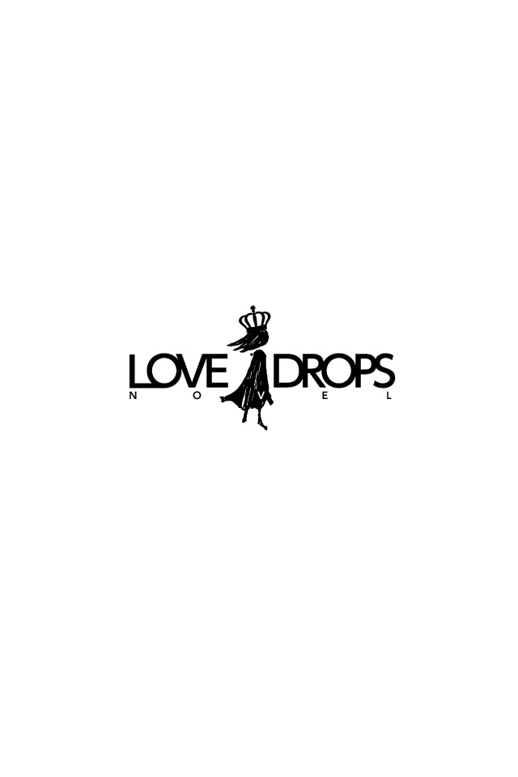

| あなたに愛のカクテルを (らぶドロップス) | |
| ひらび久美 | |
| 株式会社パブリッシングリンク (2013) | |

あなたに愛のカクテルを
ひらび久美
「痛ぁ......」
こめかみが脈打つたびにズキズキと痛み、 森 宮 のばらはうっすらと目を開けた。
「気持ち悪ぅ......」
痛む箇所を揉みながら、細く長く息を吐く。ぼんやりしていた焦点が次第に定まってきて、シミ一つない真っ白な折り上げ天井が目に映る。
「あれ？ 敦 志 、天井張り替えたの？」
のばらは同棲相手がいるはずの右側にゆっくりと顔を向けた。
「えっ？」
だが、目の前で眠っているのは、長い茶髪に無精ひげの伸びた敦志ではない。
「ええっ!? 」
弾かれたように飛び起きると、さっきまでのばらを腕枕していた左腕が、温もりを探すように真っ白なシーツの上を蠢き、指先が彼女のバスローブの裾に触れると、それをキュッと握った。のばらは息を止めて身じろぎせずにいたが、しばらく待っても相手がそれ以上動く気配がないので、ホッと息を吐いた。
（ここはどこ？ この人、どうしてここに？）
改めて男性の顔をじっと見る。
額に乱れてかかる少し長めの前髪、きりっとした眉、すっと通った鼻筋、軽く開いた薄めの唇、男らしい顎のライン。身につけているのは白く柔らかなバスローブ。自分も同じものを着ていることに気づき、のばらは愕然とする。
（どうして私、こんな格好でこの人と一緒にいるの......？）
頭痛と吐き気で、思考回路をシャットダウンしようとする頭をどうにか働かせて、昨日の記憶をたぐり寄せる。昨日は......そう、一乗寺コスメティックスのＣＭタレント・オーディションの日だった。
「では、次は特技の披露をお願いします」
広い部屋に女性審査員の声が反響した。のばらは「はいっ」と明るく返事をして、パイプ椅子から立ち上がり、フレア・バーテンダー用の大きな四角いビニールバッグを開けて、ボトルを三本取り出した。そして男性三人、女性二人の審査員が並んで座る長テーブルの前に進み出る。
（大丈夫、いつもバーのお客さんの前でやるようにすればいいんだから！）
そう自分に言い聞かせると、肩を軽く回して緊張をほぐし、大きく息を吸い込んだ。
「フレア・バーテンダー、森宮のばらによりますフレア・ショーをご覧ください。スリー、ツー、ワン、ゴー！」
のばらは頭の中の音楽に合わせて、ボトルを順に高く投げ上げた。それらが回転しながら落ちてくるのをキャッチしてはまた投げる。そうしてジャグリングを繰り返し、最後は左手で二本キャッチ。残り一本のボトルネックを右手で掴んで背中から投げ上げ、顔の前に落ちてきたのを、右手の甲で受け、大きくバウンドさせる。天井近くまで上がったボトルが落ちてきたら、そのネックを右手で掴めば成功......のはずだった。
「ヘックション！」
突然、審査員席から大きなくしゃみが聞こえ、のばらの視線が一瞬ボトルから外れた。その直後、ボトルはのばらの指の間をすり抜け、床を直撃。ガシャーンッという派手な音とともに、割れて飛び散った。
「し、失礼......」
くしゃみをした白髪交じりの男性は、ばつが悪そうにうつむいた。のばらは呆然として立ちすくむ。
「怪我はありませんか？」
審査員長の横に座っている切れ長の目をした男性が、穏やかな口調で尋ねた。
「え、あ、はい......すみません」
のばらは我に返ると、しゃがんでボトルのかけらを一つつまんだ。尖った部分に指先を突かれ、思わず声を上げそうになったが、どうにか飲み込んだ。
（どうしよう。このオーディションに賭けてたのに）
のばらの中で焦りが募る。
「危ないから触らないほうがいい。清掃スタッフを呼びましょう」
切れ長の目の男性はそう言うと、ドアの前に控えていた女性にうなずいた。女性は素早く立ち上がり、ドアを開けて廊下に出ると、すぐに清掃道具を持った水色のつなぎ姿のスタッフとともに戻ってきた。
「では、一次審査はここまでということにしましょう。森宮さん、ありがとうございました。控え室にお戻りください」
恰幅のいい審査員長にそう言われて、のばらはしぶしぶ頭を下げた。
「ありがとうございました」
力なく言って、面接室を出る。
特技のフレアで失敗したことがショックだった。〝 ザンシア〟 でバーテンダーのアルバイトを始め、オーナーバーテンダーの 瀬 堀 賢 にフレアを教わるようになって三年。人前でも失敗しないくらいの度胸も技術も身につけていたつもりだった。でも、有名になるための最後の手段として選んだＣＭオーディションの本番で、気負いすぎてしまったのかもしれない。
のばらは控え室のパイプ椅子に崩れるように座った。
控え室には、のばらのほかにも、この一乗寺コスメティックス秋の新作メイクコレクションのＣＭオーディションを受けに来た女性が二十人ほどいた。のばらと同じ二十五歳か、それより若い──募集年齢の十八歳から二十五歳の──女性だ。すでに一次審査が終わった人、これから受ける人。前者はほっとしたような、でも不安そうな表情で、後者は緊張した面持ちでパイプ椅子に腰掛けている。
それから三十分ほどして、面接と特技の披露という構成の一次審査を受けた最後の女性が、控え室に戻ってきた。部屋の空気も心なしかほぐれ、隣同士で雑談を始める女性たちも出てきた。のばらはボトルを落としたことが心残りで、ほかの女性たちのようにおしゃべりをする気になれず、足元を見ながら片手で襟元のクロスタイをいじっていた。
突然ドアが開いて、五人の審査員が全員入ってきた。控え室が一瞬で静まりかえる。応募者の視線が集中する中、審査員長が女性たちを見渡しながら言った。
「みなさん、お疲れさまでした。それでは、一次審査の合格者を発表します。名前を呼ばれた方は、返事をしてお立ちください」
のばらを含む応募者全員が姿勢を正した。部屋の中の空気が痛みを感じそうなくらいにピリピリと張りつめる。
（どうかどうか、合格していますように！）
のばらは膝の上で祈るように両手を組んだ。
「では、順に名前を読み上げます。一次審査通過者は六名です」
審査員長の太く低い声が、一人ずつ名前を読み上げていく。そのたびに息を呑む音や嬉しい悲鳴が上がり、のばらの心が少しずつ沈んでいく。やがて五人目の名前が呼ばれた。
最後の一人は？
「高田ゆきのさん、以上の六名です」
審査員長がそう告げた瞬間、のばらを含む残りの十四人が深い失望のため息をついた。
「名前を呼ばれた方は二次審査会場に移動します。こちらの女性スタッフについて行ってください」
審査員長の言葉に、合格者たちは顔を上気させながら女性スタッフに続いて部屋を出て行った。それを見送ると、切れ長の目の男性が言った。
「残念ながら不合格だった方、本日はご参加いただきありがとうございました。ささやかですが、お礼といたしまして、当社の新製品のメイクキットを差し上げます。出口で受け取ってからお帰りください」
そう言って、出口でかごを持って控えている若い女性スタッフを示した。不合格者たちは重い腰を上げて席を立ち、出口に向かい始める。
のばらは最後に席を立ち、審査員長の前で立ち止まって彼を正面から見た。審査員長は怪訝そうに眉を寄せる。
「あのっ、もう一度、チャンスをいただけませんか？ 私、フレアには自信があるんです。くしゃみに気を取られさえしなければ、うまくできたはずなんです！」
審査員長は困惑した表情で言った。
「残念だけど、もう審査は終わったんだよ。みんな同じ一発勝負だからね」
「でも、みなさんが審査でくしゃみをされたわけじゃないでしょう？」
納得できないのばらは食い下がった。審査員長が困ったように切れ長の目の男性を見上げると、彼はのばらを見下ろし、穏やかな声で言った。
「おっしゃることには一理ありますが、くしゃみは不幸なアクシデントです」
「一理あると思うのなら、もう一度、フレアを見てください！」
のばらが訴えるように言うと、彼は厳しい目をして言った。
「たとえ次にうまくできたとしても、あなたでは合格できません」
「どういう意味です？」
のばらのむっとした口調も意に介さず、彼は淡々と続けた。
「新製品のテーマは〝 幸せオーラ・メイク〟 です。それはあなたもご存じですよね？」
「はい」
「当社が求めているのは、内面から幸福感がにじみ出ているような女性です。残念ながら、あなたはそのイメージからは程遠い」
その言葉がのばらの胸を突き刺した。まるで自分の過去を見透かされたような気がした。
「──ありがとうございましたっ！」
のばらは動揺をどうにか抑え込み、勢いよくお辞儀をすると、つかつかと出口に向かった。差し出されたメイクキットを無造作にバッグに突っ込み、一直線にエレベーターホールに向かう。先に出た不合格者が数人、並んでエレベーターを待っている。その最後尾に並んだのばらは、ちらっと控え室を振り返った。部屋から出てきたさっきの彼が、審査員長と談笑しながら、廊下を遠ざかって行く。
のばらの頭の中に、男性の声がリピートする。〝 残念ながら、あなたはそのイメージからは程遠い〟 。
（何よ、私が不幸の塊だとでも言いたいわけ!? ）
のばらは苛立ちを抱えたまま、エレベーターに乗り込んだ。
一乗寺コスメティックスの本社ビルを出て、大阪駅から電車に乗り、五歳年上の恋人、 海 野 敦志と同棲しているアパートのある駅で下りた。敦志はのばらの所属している劇団〝 海と陸〟 の創設者の一人で、脚本家でもあり、この時間は自宅で執筆作業をしているはずだ。
駅前のコンビニで敦志の夕食用に弁当と缶ビールを買い、二階建てのコーポに戻った。外付けの鉄さびの浮いた階段を重い足取りで上ると、まだ午後四時だというのに、どこかの部屋からか女性の嬌声が聞こえてくる。
「あん、あぁん......」
のばらは顔をしかめた。
（もう、やあね。お隣さんかしら。ここは壁もドアも薄いんだから、もうちょっと気を遣いなさいよねっ。私だっていつも声を抑えてるのに）
のばらが鍵穴に鍵を差し込んで回し、ドアを開けた瞬間、嬌声が一段と大きくなった。
「はぁん！ 敦志さぁん！」
ワンルームの部屋の奥、窓際に置かれたセミダブルベッドの上で、茶髪の男性の裸の背中が大きく揺れている。その下にはぽっちゃりした色白の女性の裸体。
のばらの手からコンビニ袋がドサッと落ち、缶ビールが転がった。敦志がハッと振り向く。
「うわっ」
「きゃっ」
敦志は反射的にタオルケットで股間を隠し、女性は胸元までタオルケットを引き上げた。のばらはその女性をよく知っていた。二ヵ月前〝 海と陸〟 に入団した、まだ十九歳の 山 阪 遥 菜 だ。
「あ、あなたたち、何してるのよ！」
ヒステリックなのばらの声に、敦志は頭を掻きながら言った。
「何って、まあ、ちょっとした運動」
「ふざけないでよっ！」
真っ赤になって怒るのばらに、敦志は悪びれる様子もなく言った。
「のばらさぁ、今日はオーディションの後、バイトに直行するって言ってなかったか？」
「そうだけど、敦志に晩ご飯をと思って、コンビニでお弁当を買ってきたのっ！」
それに、オーディションに落ちたことを慰めてほしかった。それなのに、私の留守中に浮気するなんてっ！
「敦志さん、コンビニのお弁当なんて食べてるんですか？ やだぁ。未来の売れっ子脚本家はもっといいもの食べなくちゃ、いいアイデアも浮かびませんよぉ。遥菜と一緒にイタリアン食べに行きましょうよぉ」
遥菜が甘ったるい声で言って、敦志にしなだれかかった。
「敦志に触らないでっ！」
二人はさっきまで裸で抱き合っていたのだから、触らないでというのもおかしな話だが、のばらの思考回路はショート寸前だった。
「俺な、もうのばらじゃ脚本が書けないんだ」
「え？ それどういう意味？」
敦志が片手で遥菜の肩を抱いたので、のばらは激しい嫉妬を覚えた。
やめて！ 私以外の女を触らないで！
「もうのばらじゃ主人公のイメージが湧かないんだ。ストーリーを盛り上げるには、なんて言うかな、ほら、もっとこう......エロティックで肉感的な女がいいんだ」
「意味わかんない」
「だから、遥菜なら、次の脚本のイメージにぴったりってことなんだよ」
「何、それ。だから浮気したって言うの？」
「脚本家ってのはインスピレーションが大事なんだ。遥菜は可能性に満ちあふれてる」
「遥菜は、のばらさんにはないものをたくさん持ってるもん」
遥菜が敦志の胸を指でなぞるのを見て、のばらの頭に血が上る。
「わ、私は元モデルで、あなたの劇団の看板女優なのよ！」
「遥菜の親父さんは大阪ＴＶ放送の大株主、山阪工務店の社長なんだ。俺の脚本が気に入れば、テレビドラマ化も夢じゃない」
「そのために遥菜ちゃんと寝たって言うの？」
「まさか。遥菜とは正式に付き合いたいと思ってる。もちろん遥菜を愛しているからさ」
六年前、敦志はのばらを〝 海と陸〟 に誘ったときにも、同じように言った。〝 キミと付き合いたいのは、もちろんキミを愛しているからさ〟 。その言葉を思い出し、のばらの目にうっすらと涙が浮かぶ。
「私を愛してるって言ったじゃない......俺がずっと愛してやるって......」
「遥菜に出会うまではそう思ってた」
「ひどい......」
じゃあ、もう二ヵ月も前から私への気持ちは冷めてたって言うの!?
のばらは拳を握りしめて叫んだ。
「出てってよ！ 二人とも出てって！」
のばらの剣幕にも動じず、敦志はニヤッと笑って言った。
「ここって俺の部屋だよな？」
その言葉に、のばらはハッとした。そうだ、ここは敦志のアパートで、のばらは大学を卒業した三年前、舞台女優として本格的に活動するために、実家を出て敦志の部屋に転がり込んだのだった。
「いいわ、私が出て行けばいいんでしょっ。私を有名にしてくれるって言うから、信じて六年も待ったのに！」
「俺のせいじゃない。のばらじゃいい脚本が書けなかったってことだ」
「人のせいにしないでよ！」
のばらの瞳から涙がこぼれ落ちた。それを手の甲で拭うと、のばらは押し入れからスーツケースを引っ張り出し、衣装ケースと洋服掛けから自分の衣服を抜き出して、放り込んだ。それから洗面所の化粧品類とお気に入りのCD を詰め込む。後は......何かあったっけ？
のばらは部屋をぐるりと見回した。色あせたカーペット、所々ささくれた柱、狭く暗いキッチン。それでものばらは敦志と二人のお城だと思っていた。彼の書いた脚本で稽古をする傍ら、バーでバイトをして、チケットを売って生活する。それをこの部屋で敦志とともに三年も続けてきた。〝 脚本家として大ブレイクして、のばらをテレビに出してやる〟 、〝 今度のは絶対イケる気がするんだ。おまえも有名になれるぞ〟 。敦志は脚本のことになると、いつも上気した顔で目をキラキラさせた。常に前を見て、若さと情熱に任せてのばらの前を突っ走る。のばらはそんな敦志を頼もしく思い、そして本当に好きだったのだ。
「さよならっ」
のばらは吐き捨てるように言って、部屋を出た。先にフレア・バーテンダーバッグを持って階段を下り、一階に置くと、また二階に戻って今度はスーツケースを下ろした。二つの重い荷物をゴロゴロ引っ張りながら、時折足を止めてはこぼれ落ちる涙を拭う。ようやく駅に着いたときには、涙と汗で顔はぐちゃぐちゃだった。それをハンドタオルで拭いて、路線図を見上げる。
どこに行こうか。実家......？
のばらの脳裏に、祖母の声が響く。「就職もしないで、水商売のアルバイトをしながら舞台女優を目指すって？ そんな恥ずかしいこと、やめてちょうだい！」
育ててくれた祖父母に背を向けるのはつらかった。でも、どうしても有名になりたかった。十六歳で雑誌モデルにスカウトされ、努力の甲斐あって、そのうちファッション誌の表紙を飾るようになり、十九歳のときに大学で敦志に声をかけられ、劇団に誘われた。彼はその数ヵ月前に書いて上演された『大阪ホルモン』が地元の新聞やテレビで話題になり、ちょっとした有名人になっていた。その彼に口説き落とされ、劇団メンバーに加わった。大学を卒業した三年前には、劇団の活動に集中するため、モデルを辞めて彼の部屋に転がり込んだ。でも、敦志は『大阪ホルモン』以来、メディアを賑わすことは一度もなく、しがない脚本家として、あの古いコーポ暮らしを続けている。
そんな敦志に頼っているだけでは有名になれないと思い始め、今日は一乗寺コスメティックスの一般参加のオーディションを受けた。でも、結果は不合格。おまけに敦志には浮気され、家を追い出された。
「こんな私から〝 幸せオーラ〟 なんて出るはずないか......」
のばらはつぶやくと、少し早いがいつもの通りバイト先のバー、ザンシアに行くことにした。
ザンシアに着くと、いつも通り開いている裏口から中に入った。休憩室の横を通って店内に入ると、ダークブラウンの羽目板張りの壁に、ランプ型の照明が三つ灯されている。一本の樫の木で作られた長いバーカウンターの向こうで、オーナーバーテンダーの賢が、低い背もたれのついたスツールを拭いていた。
「おはようございまーす」
のばらが声をかけると、賢は顔を上げて優しい笑顔を作った。
「やあ、のんちゃん。早いね」
だが、のばらの顔と荷物を見て眉を寄せる。
「どうした？」
「ちょっといろいろあって......。敦志に家を追い出されちゃった」
「敦志くんに？ いったいどうして」
「家に帰ったら、遥菜ちゃんとベッドの中にいた」
賢の表情が険しくなる。
「今度来たら、敦志くんをぶん殴ってやる」
「もう来ないんじゃない」
のばらは投げやりに言って、一番手前のスツールに腰を下ろした。賢は〝 森宮のばらファン第一号〟 を公言しており、公演のポスターをいつも店の壁に貼ってくれるし、チケットを売る手伝いもしてくれる。そんな賢お気に入りののばらを裏切っておいて、敦志がのこのこザンシアに顔を出せるとは思えない。
のばらがカウンターにつっぷすと、賢が低い声で言った。
「相当参ってるみたいだね」
「うん」
のばらは深いため息をついた。
「オーディションも不合格だったし、彼氏にも振られるし、ほーんと、最低」
「えっ、不合格だったのか？」
賢が信じられない、と言うように、大きく目を見開いた。
「そう。審査員の一人がくしゃみをして、それに気を取られてボトルを落としちゃった」
「そうか......」
賢はスツールを拭きながら続けた。
「集中力が途切れてしまったんだな」
「そうなの。でも、人のせいにしちゃいけないわね。どんな状況でも集中してフレアを見せられなくちゃ、プロとはいえない」
そう言ったものの、のばらは釈然としなかった。フレアのプロを目指していたわけじゃない。フレアは賢がやっているのを見てかっこいいなぁと思い、教えてもらうようになっただけだ。
私は何をしたいんだろう。有名になることばかり考えてきたから、そのための道が──モデルも舞台女優もＣＭタレントも──すべて断たれてしまった今、自分が何になりたいのか、どうしたいのかまったくわからない。
また涙がにじんできて、のばらはカウンターに額をコンと打ちつけた。
「賢さん、今日はバイト休んでもいい？」
「構わないよ」
「飲んでもいい？」
「いいよ。何飲む？」
のばらは顔を上げた。
「元気の出るカクテル」
「了解」
賢はカウンターの中に入ると、慣れた手つきで氷を入れたミキシング・グラスに材料を入れ、バースプーンで掻き混ぜると、 濾し器 を通してカクテル・グラスに注いだ。
「お待たせ」
「ありがとう」
口に含むと、ドライジンとペパーミントの香りが鼻を突く。
「ノックアウトね」
のばらが言うと、賢はニヤッと笑って言った。
「落ち込んだときは、これに限る」
六時になると、賢は店の表扉の鍵を開け、ＯＰＥＮと書かれたプレートを下げた。低いボリュームでジャズを流し、メロディを口ずさみながら、グラスを磨いている。それが終わり、ガスコンロの横で料理の下ごしらえをしている賢を、のばらが見るとはなしに見ていると、店の扉につけられたベルがチリンと鳴った。壁の時計を見ると七時半。平日のこの時間にやってくるのは、のばらがザンシアでバイトを始める前からの常連客、ダンさんこと、 檀 上 圭 介 だ。
「おこんばんはー」
先月五十二歳になったばかりの圭介は、恰幅がよく、頭髪はかなり薄くなっている。小さな介護用品店の店長で、〝 仕事ばかりしとったら、髪の毛が愛想を尽かして出て行ってしもたわー〟 と笑う、人のいい男性だ。
圭介はいつも座る真ん中の席に腰を下ろした。
「のんちゃん、今日はバイトちゃうの？」
「うん。今日はお客様なの」
「ほな今日はのんちゃんの焼きおにぎり食べられへんのかー」
圭介が残念そうに言った。
「今日は賢さんに作ってもらってください」
「しゃーないな。ほな、賢さん、頼むわ」
「はいよ」
賢は苦笑すると、いつものようにジョニーウォーカー黒ラベルのシングルを圭介の前に置いた。それから手早くコンビーフとキャベツの炒め物と、チーズ入り焼きおにぎりを作った。焦げたチーズの香ばしい匂いが、カウンター席が七席だけの狭い店内を満たす。出された焼きおにぎりを食べた圭介が、「ん？」と小首をかしげた。
「どうしたの？」
のばらが訊くと、圭介は首を振りながら言った。
「やっぱりのんちゃんの愛情が入ってへんと、おいしないわー」
のばらは思わず口の端を上げた。賢がわざと憤慨したように言う。
「失礼だな、僕がちゃんと愛情を込めたのに」
「おっさんの愛情なんかいらんわ」
「おっさんって。ひどいな、ダンさん。僕の方が年下なのに」
「たったの五歳やろ～。変わらへん、変わらへん」
「天と地ほどの違いだよ」
賢の言葉に、圭介が大きな口を開けて笑った。つられて賢も笑ったが、のばらは軽く首を振っただけだった。圭介が声をひそめて賢に訊く。
「なあ、のんちゃん、どないしたん？」
「今日は厄日らしい」
「まさかのまさかり～、トラベル比べるぅ？」
「ダンさん、サムイ」
のばらが二人の方を見たとき、チリンとベルが鳴って、客の来店を知らせた。のばらが視線を手元のグラスに戻したとき、彼女の横の席に客が座った。ちらりと見ると、しっかりと折り目のついた、仕立てのよさそうなスーツに包まれた長い脚と、艶のある革靴が目に入った。
「おっ、賢さん、珍しいやん。ご新規さんやで」
圭介が嬉しそうに言った。フレア・バーテンダー・スクールなどでフレアの講師をしながら気ままな独身生活を送っている賢は、ザンシアを趣味の延長で経営しているため、客の入りなどほとんど気にかけていないが、同じ経営者として圭介はやはり気になるらしく、常連以外の客が来ると嬉しそうにする。
「この店では美人バーテンダーがフレアを見せてくれると聞いたんですが」
耳に心地よい低音で、男性が言った。
「今日はあいにく休みなんです」
賢がのばらを見ずに言った。
「それは残念だな。ところで、ここは店の名前がザンシアっていうくらいだから、ザンシアがお勧めなのかな？」
「──のんちゃん、お客さんが訊いてはるで」
圭介に言われて初めて、のばらは男性が自分に話しかけていたのだと気づいた。客の方に顔を向けて、目を丸くする。そこにいたのは、オーディションの審査の後でのばらを叩きのめした切れ長の目の男性だった。
「あなたっ」
のばらの声が上ずったので、圭介と賢が声を揃えて言った。
「のんちゃん、知り合い？」
「知り合いっていうほどじゃないわ。オーディションの審査員だった人」
のばらはつんと横を向いた。
「やっぱキャベツのコンビーフ炒め、うまいなぁ......」
触らぬ神にたたりなし、とでもいうように、圭介は手元の皿に視線を落とした。
「で、お勧めは何かな？」
「ナイトメアなんていかがです？」
のばらはトゲある口調で言った。
「それは今日のことがキミにとって 悪夢 だったから？」
のばらは男性をキッと見据えて言った。
「人のことをあんな風に不幸の塊みたいに言った人に、どうして愛想よくしなくちゃいけないのよ」
「あれは仕事だったから。でも、言い方が悪かったな、と後で反省したんだ。キミの履歴書にここの住所が書いてあったから、キミに会えるかなと思って来てみた」
「落ちた人を全員慰めて回ってるの!? それはご親切なことで」
「そうじゃない。キミがどういう人間か個人的に興味を持ったんだ」
のばらは冷たい視線を送った。
「見ればわかるでしょ。若くて一番輝いていた六年間を捧げた恋人に裏切られ、夢破れて飲んだくれてる女よ。幸せオーラなんか出したくても出てこないわよっ」
「自分が一番不幸だとでも？」
彼の小馬鹿にしたような口調に、のばらはカチンと来た。
「何よ、あなたに私の何がわかるっていうのよ！」
「わからないから教えてほしい」
「なんであなたになんかに......」
思わずのばらは立ち上がったが、賢に「のんちゃん」と諭すような口調で名前を呼ばれ、すとんと腰を下ろした。
相手にするべきではないのかもしれない。でもこれでは、たいして不幸でもないくせに悲劇のヒロインぶっていると言わんばかりだ。それなら、彼がどれほど不幸なのか聞いてやろうじゃない。
「わかったわ。じゃあ、河岸を変えましょ」
今は客として飲んでいるとはいえ、ザンシアはのばらの家も同然、賢や圭介は家族にも等しい存在だ。二人の前で不幸自慢などしたくない。
そう思って、のばらは再び立ち上がった。
「のんちゃん」
賢が心配そうに声をかけたので、のばらは笑顔で言った。
「大丈夫。スーツケースとバッグは後で取りに来るから、休憩室に置いててもいい？」
賢がうなずいたので、のばらは荷物を奥の通路に面した扉から休憩室に入れた。
「じゃあ、行きましょ」
促すと男性も立ち上がった。のばらは店を出ると、脇目もふらずにずんずん歩き出した。ザンシアから近くて、興奮して声が大きくなっても気にならないような賑やかな店を求め、ビルの一階にあるイングリッシュ・パブの前で足を止めた。イケメン・バーテンダーがいると評判で、劇団仲間と何度か来たことのある店だ。看板を見上げた男性がうなずいたので、のばらは中に入った。店内には若い女性客が多く、話し声と音楽が騒々しいくらいだ。
「ザンシアとは大違いだな」
注文したカクテルを持って、開いていた隅の丸テーブルに着くと、男性が騒音に負けまいと大きな声で言った。
「どうせうちは流行ってないわよ。ザンシアのことを悪く言わないで」
「悪く言ってるんじゃない。ザンシアは落ち着いていていいなっていう意味だよ」
「そう」
のばらは不機嫌そうにモスコミュールのグラスに口をつけた。のばら自身、これで何杯目かは覚えていなかったが、かなり酔いが回って目が据わっている。
「さっきの口ぶりだと、あなたの方が私よりも不幸だっていう風に聞こえたけど」
「そうだなぁ。親に愛されていないって、どんな感じだと思う？」
男性が切れ長の目で、のばらの瞳をのぞき込んだ。
「は？ そんなのわかるわけないじゃない」
「そうだろうね。僕の父と母は政略結婚だったんだ。僕が生まれたけど、夫婦としてうまくいかなくなって、僕が九歳のときに離婚して母は出て行った。それからすぐ父は昔の恋人と再婚して、生まれた僕の弟を溺愛している。僕が高校で成績が学年トップになっても、大学を首席で卒業しても、アメリカの大学でＭＢＡをとっても、見向きもしなかった」
「ふうん」
「それに新しい母は僕に気を遣っているのか、よそよそしくてね。毎日が孤独だった」
「それで？」
のばらの気のない返事に、彼は眉間にしわを刻んで続けた。
「想いを寄せて付き合った女性は、弟のことが好きだった」
「それは悲劇ね」
のばらはモスコミュールを飲み干して続けた。
「もし私の方が不幸だと思ったら、あなた、次奢ってよね」
「よし。じゃあ、聞かせてもらおうか」
彼は椅子の背にもたれ、腕を組んだ。
「私の母はね、私を産んだときに脳出血で死んだの」
男性はハッと息を呑んだ。
「父の顔は知らない。顔どころか名前も知らない。私が生まれてすぐに蒸発したの。それで母方の祖父母に育てられたんだけど、二人とも父のことは何も教えてくれない。私がどんなに会いたがってもね」
男性は腕をほどき、いたわるようにのばらを見つめた。
「十六歳のときにモデルを始め、十九歳で、ある人に誘われて劇団に入ったの。〝 俺がおまえを有名にしてやる〟 っていうのが口癖の人だった。その人がついさっきまで私の恋人だった。同棲してたの」
「ついさっきまで......？」
男性が怪訝そうに眉根を寄せた。
「そう、ついさっきまで。オーディションで不合格になって、落ち込んで帰宅したら、彼と劇団の後輩が、ベッドの中で裸で抱き合っていたの」
「すまないことを言ってしまったな......」
心底同情したような彼の低い声に、さっきまで感じていた苛立ちが薄まり、のばらは小さく笑って言った。
「いいの、あなたの仕事は〝 幸せオーラ〟 の出ている人を探すことだもんね。自分の仕事をしただけなんでしょ。別に私は恨んでなんかない。ただ、真実を言い当てられたようで悔しかったのと、不幸ぶってると言われている気がして腹が立っただけ」
「いや、本当に心からすまないと思っている」
男性はのばらの左手に自分の右手を重ねた。
「私は自分の方が不幸だって自慢したかったわけじゃないのよ。だって、私には賢さんもダンさんもいる。ダンさんの親父ギャグはいただけないけど、二人とも私によくしてくれる。劇団の公演も何度も観に来てくれたし......」
そう言いながら、のばらは左手を彼の手の下から引き抜いた。
「さあ、約束通り奢ってもらうわよ」
「了解。何杯でもお好きなものをどうぞ」
「せっかくパブに来たんだから、イングリッシュ・サイダーをお願い」
「へえ、リンゴ酒か。いいね」
彼は立ち上がってバーカウンターに向かった。
それから発泡性のリンゴ酒、別名シードルをおかわりして、もう少し話をしたような気がするが、その後のはっきりした記憶はない。だが、裸でバスローブを着ていることが、二人の間で何があったかを雄弁に物語っている。
（敦志と別れたばかりだっていうのに、最低）
のばらは思わず大きなため息をつき、ハッとして男性の方を見たが、彼は変わらず穏やかな寝息を立てていた。のばらは肩の力を抜き、裾を握られたままのバスローブの紐をそっと解く。そのまま裸でベッドから下りて洋服を探すと、バスルームの手前のかごに乱雑に投げ入れられているのを見つけた。のばらの洋服が下になっていたので、それを抜き取って身につけると、忍び足でベッドに近づき、サイドテーブルの上の自分のバッグを掴んだ。息をつめて男性を見たが、彼は身動き一つしない。
のばらは静かにベッドから離れ、部屋のドアの鍵を開けて押した。かすかにドアが軋んでドキッとしたが、ベッドの方からは何の物音もしない。のばらは胸を撫で下ろすと逃げるように部屋を出た。
エレベーターで一階に下りると、壁のほとんどがガラス窓の明るいロビーに着いた。緊張しながらフロントの前を通ると、パリッとしたベージュ色の制服姿のホテルマンに「いってらっしゃいませ」と声をかけられた。のばらは心臓が口から飛び出しそうになったが、平静を装って会釈した。
ロビーを出て建物を見上げると、そこは誰でも知っているような名の通った高級ホテルだった。
（ホテル代請求されるかなぁ......。そもそも、また会うことってあるのかしら）
携帯電話を見ると、賢から五回も着信があった。最後の着信は午前五時半。
「あっ......」
しまった。
のばらは近くの公園のベンチに腰を下ろした。携帯電話の時刻表示はまだ七時十分だ。ザンシアの営業時間は午前三時までだから、今頃賢は自宅に戻って眠っていることだろう。戻ってくると言ってしまったから、心配して待っていたに違いない。のばらは頭を抱えた。知り合ったばかりの名前も知らない人と一夜を共にしてしまった。二日酔いで頭は痛いし気持ち悪いし、気分は最低だ。
何もする気になれず、ぼうっと座っていると、やがて制服を着た中学生とおぼしき男子の集団が、ふざけ合いながら公園の前を通っていった。そのうちに小さな子ども連れの母親が何人もやってきた。公園の時計塔を見ると、針は十時を示している。
のばらはのろのろと立ち上がると、公園を出た。ホテルとは逆の方向に、線路沿いをトボトボ歩く。前方にファーストフード店が見えたので、そこへ入ってコーヒーを注文した。窓際の席に座って、道行く人を見るとはなしに見て時間をつぶしていると、携帯電話が鳴った。賢からだ。
のばらは店を出ると通話ボタンを押した。
「もしもし......」
「のんちゃん！」
賢のホッとしたような声が聞こえてきた。
「今どこにいるんだ？」
「天王寺駅の近く」
「一人なのか？」
「うん」
「心配したんだよ。何度も電話したんだ」
「ごめんなさい」
「行くところがないんだろう？」
のばらはためらったが、正直に答えた。
「うん......」
「じゃあ、ザンシアに来なさい。話はそれからしよう」
「わかった」
「いいね、今すぐ来るんだよ。僕はまだ店にいるから」
「はい」
のばらは携帯電話をバッグに戻すと、来た道を引き返した。ただし、ホテルの前は迂回して避けた。
ザンシアの裏口からそっと顔をのぞかせると、賢が飛んできた。
「のんちゃん！」
そしてのばらをギュッと抱きしめる。
「け、賢さん？」
のばらが困惑した顔で固まっていると、賢があわててのばらを離した。
「あ、ごめん。のんちゃんの無事な姿を見て、つい嬉しくて」
賢は照れ笑いを浮かべると、のばらの背中を軽く押して、休憩室に連れて行った。そこには昨日、のばらが置いていった荷物がそのままになっている。
「まあ、とにかく座りなさい」
のばらは言われるままにソファに腰を下ろした。賢は立てかけてあった折りたたみ椅子を広げると、のばらの前に置いて座った。
「本当に心配したんだよ」
半分怒って半分安心しているような表情で賢が言った。
「心配かけてごめんなさい」
のばらはうなだれた。きっと賢はのばらが何をしてきたのか感づいているだろう。それが恥ずかしかった。
「のんちゃん、住む所がないのなら、部屋が見つかるまでここの休憩室を使ったらどうかな？」
「え？」
のばらは顔を上げた。この休憩室にはソファベッドと簡易キッチン、それにユニットバスまである。今はのばらがアルバイトの間に夕食をとったり、酔っ払った〝 海と陸〟 の団員が休憩したりするのに使っているが、ザンシアのオープン当初は賢がここに住んでいたらしい。
「でも、そこまでしてもらうのは申し訳ないもの」
賢の申し出はありがたかったが、昨日の自分の行為が後ろめたくて、素直に受けられなかった。賢はため息をつくと、のばらの両手を握った。
「敦志くんに浮気されてショックなのはわかるけど、自暴自棄になるのはよくない。昨日のようなことは、もうしてほしくないんだよ」
〝 昨日のようなこと〟 が〝 よく知らない男と寝ること〟 だと言われている気がして、のばらは恥ずかしさに顔がほてった。
「ただし、ここに住んでもらうには条件があるんだ。一ヵ月後にあるフレア・サマー・ナイト・カップというフレア・バーテンダーの大会に出てほしい」
「へ？」
予期せぬ言葉に、のばらはぼんやりと賢を見た。
「のんちゃんが大会で活躍すれば、ザンシアも有名になるかもしれないしね」
「だって、賢さん、ザンシアは趣味でやってるんじゃなかったの？ それなのに有名店にしたいの？」
のばらが訊くと、賢は穏やかな笑みを浮かべて言った。
「正直に言うとね、目的はザンシアを有名にすることじゃないんだ。のんちゃんに生きる目標を持ってもらうことなんだよ」
賢の心遣いが胸に染みて、のばらの目にうっすらと涙が浮かんだ。
「ありがとう。私、がんばってみる」
のばらの言葉に、賢はホッとして大きな笑顔になった。
その日の午後八時。例のごとくジョニ黒片手に親父ギャグを飛ばす圭介にのばらが付き合っていると、店の扉のベルがチリンと鳴った。のばらが顔を上げると、入ってきたのは今朝まで一緒に過ごした彼だった。賢と圭介の前で何を言われるのだろう、と思うと不安で胸がドキドキする。
「いらっしゃいませ......」
のばらが小声で言ったとき、コンロの前にいた賢が振り向き、客の顔を見て表情を硬くした。圭介はそんな賢と客の顔を順番に見てから、のばらに視線を向けた。男性はつかつかとカウンターに近づくと、のばらに向かって言った。
「少し話がしたい」
のばらが口を開く前に、賢が彼女を庇うように前に立った。
「ちょっと、あんた。客とはいえ、これ以上のんちゃんにつきまとうと、僕が許さないぞ」
賢が低い声で凄んだが、男性は気にする様子もなく、穏やかな笑みをたたえて言った。
「昨日のことを怒っているなら、あれは合意の上の出来事ですよ」
「のんちゃんは落ち込んでいたんだぞ。あんたはその彼女の気持ちにつけ込んだんだ」
賢がカウンターに身を乗り出さんばかりにして言ったので、のばらはあわてて賢の黒いベストの裾を引っ張った。
「賢さん、大丈夫よ。ちょっと話をするだけだから」
「だけど......」
心配そうに振り向く賢に、のばらは笑みを作ってうなずいた。
このお客に、昨日のような関係を続ける気はないと伝えなければ。
「外に出て話しましょ」
のばらはカウンターを回り、先に店を出た。店は大通りから二本入った狭い道路沿いにあるため、人通りも人目もほとんどない。のばらは角まで歩くと、足を止めて男性と向き合った。
「昨日のことなんですけど」
のばらが口を開くと、彼は小さく笑って言った。
「昨日はあんなに意気投合して熱い夜を過ごしたのに、今朝は何も言わずに一人で帰ってしまうなんて、ひどいな」
「あなたは合意の上だったって言うけど、私、何も覚えてないんです......」
彼がかすかに目を見開いて言った。
「本当に？ 僕に〝 私を愛して〟 って泣きついたことも？」
「えっ、そんなこと私がしたんですか？」
のばらは青ざめた。それではまるでのばらの方から誘ったみたいだ。
「そうだよ。同じ孤独を抱えているんだって、僕は嬉しかった」
「あの、私、普段からあんなことを軽々しくしているわけじゃないんです。たまたま嫌な出来事が重なって、それで飲み過ぎてしまって......」
「〝 あんなこと〟 から始まる付き合いがあってもいいと思うけどな」
どう言えば、昨日の関係を清算できるんだろう。のばらが焦っていると、店から賢が出てきて、二人のもとへ一直線に歩いてきた。
「あんた、いいかげんにしてくれないか」
険しい表情で男性を睨みつけると、賢はのばらの腕を引いて強引に店に向かった。
「け、賢さん、あの人、一応お客さまなんだし......」
のばらが賢に引きずられるように歩きながら言うと、賢は聞こえよがしに言った。
「僕の気に入らない客など来なくていいんだ」
のばらがちらっと振り返ると、男性がにっこり笑った。のばらはあわてて目をそらした。
その日も午前三時で閉店し、片付けを済ませた賢は店を出た。のばらは休憩室のユニットバスで手早くシャワーを浴びると、パジャマに着替えてソファベッドに横になった。ふと横の棚を見ると、奥の方に写真立てがある。
「誰の写真だろ」
好奇心から起き上がって手に取ると、それはのばらが二十歳の誕生日、初めてここに来たときに、賢に頼まれて一緒に撮った写真だった。
「賢さん、ずっと持っててくれてたんだ」
のばらの顔がほころんだ。〝 海と陸〟 の公演を賢がよく観に来てくれていることに気づき、あるとき、のばらの方から声をかけたのだ。
「いつも観に来てくださってありがとうございます」
のばらが公演の後、会場の出口で賢にそう言ったとき、賢はひどく驚いた顔をした。だが、すぐにあわてたようにポケットから名刺入れを出すと、一枚引き抜いてのばらに差し出した。
「カウンターだけの狭いバーなんですが、ぜひお友達を誘って来てください」
「じゃあ、お酒が飲める歳になったら行きますね」
社交辞令のつもりで言ったのに、賢がものすごく嬉しそうな顔をしたので、のばらは二十歳の誕生日に、大学の友達を誘ってザンシアを訪れた。のばらを見た賢は、驚きと喜びの入り混じった表情で、椅子を勧めてくれた。のばらが「今日誕生日なんです」と言うと、賢はアルコールの入ったボトルやグラスを投げたり回転させたりしながらフレアを披露し、カクテルを作ってくれた。その名もハッピー・バースデーという、シャンパンとオレンジキュラソー、パイナップルジュースを使った甘酸っぱいカクテルだった。
それ以来、劇団の練習の帰りなどに数人のメンバー──いつも敦志が一緒だったけど──と時々ザンシアを訪れるようになった。大学を卒業して敦志と同棲を始めたのばらが、金銭的に困っていることに気づいた賢は、のばらをバイトとして雇ってくれた。劇団の練習があるのでバイトに入れる日や時間が不規則になると言うと、それでも構わないと言ってくれた。食材が余ったと言ってはのばらに持たせてくれたりして、賢には本当に世話になっている。
「賢さん、ありがとう」
のばらは写真の中の今より少しだけ若い賢に礼を言うと、写真立てを棚に戻し、電気を消して横になった。
その日の昼、のばらは天王寺公園に出かけた。初夏の公園は緑が溢れていて気持ちよく、子連れの母親やお年寄りも多い。のばらは利用者の迷惑にならないよう、今はもう廃業してしまった売店の前でバーテンダーバッグを開けると、練習用の丈夫な硬化プラスチック製ボトルを取り出し、フレアの練習を始めた。三本のボトルをお手玉のように投げていると、時折子どもが寄ってきて、のばらをじっと見る。視線を感じた瞬間、のばらはボトルを取り損ねた。
「お姉ちゃん、すごーい」
落としてしまったのに、三歳くらいの男の子にそう言われて、のばらは苦笑した。
「たいちゃん、邪魔しちゃダメよ」
男の子の母親がやって来て、手を引いて離れていった。気を取り直してボトルを投げ上げた瞬間、クラクションが鳴り響き、驚いて反射的に手を止めると、ボトルはまた地面を叩いた。
天王寺公園は大きな車道に面しているため、車やバイクのエンジン音、緊急車両のサイレン音など、さまざまな音がする。本当に集中しないと、木々のざわめきや小鳥のさえずりにさえも集中力を削がれてしまう。
のばらは何度目かに落としたボトルを拾うと、額の汗を拭った。白いブラウスが汗ばんだ肌にべったり張りついて、気持ち悪い。手で顔を扇いだとき、のばらの頬に冷たいものが当たった。
「ひゃっ」
驚いて振り向くと、よく冷えたスポーツドリンクのペットボトルを手に、一昨日一緒に夜を過ごした彼が、切れ長の目を細めて微笑んでいた。
「あら、あなた......」
のばらがつぶやくように言うと、彼はペットボトルを差し出した。
「ありがとう」
のばらは受け取ってキャップを開けると、喉の欲するままにゴクゴクと飲んだ。
「ふぅ、おいしい。ところで、どうしてここに？」
のばらが訊くと、彼は背後にそびえ立つ、地上三百メートルの日本一の超高層ビル、あべのハルカスに目をやった。
「仕事で近くの店舗に来たんだ。終わってハルカスのカフェでコーヒーを飲んでいたら、窓から公園でフレアをしている人が見えてね。もしかしてと思って見に来たら、やっぱりキミだった」
「ふうん、外回りの仕事も大変ね」
劇団に入りたてのころ、下っ端だからというよりはモデルという知名度を生かして、ポスターを貼ってもらうためによくいろんな店を回ったりしたものだった。その苦労を思い出し、下っ端は大変ね、と勝手に同情を覚える。
「まあね。でも、寄り道しておいしいコーヒーを飲んで帰れる」
とっくに初の真夏日を迎えた大阪では、今日も三〇度を超えようかという気温なのに、彼は涼しげに微笑んだ。
「今日もザンシアに来るの？」
ほかに適当な会話が思いつかず、のばらは尋ねた。
「どうかな。行きたいけど、オーナーに嫌われてる」
彼が肩をすくめたので、のばらはふっと笑った。
「あなた、押しが強すぎるもの」
「一昨日の夜のように、名前で呼んでくれないかな？」
「え？」
のばらは彼を見上げた。名前なんて聞いたんだろうか。
「〝 雄 磨 さん〟 って甘い声で呼んでくれてたのに」
雄磨っていう名前なんだ。そういえばそう聞いたような気がしないでもない......。って甘い声？
「その話ですけど......」
雄磨の顔から笑みが消え、真剣な表情になった。
「僕もきちんと話したかった。僕たち、正式に付き合わないか？」
いきなり言われて、のばらは困惑した。確かに自分は今はフリーの身だし、彼とは一晩一緒に過ごしたんだから、付き合ってもおかしくはないだろう。でも......彼のことをよく知らないし、フレアの大会まで時間もあまりない。
「ごめんなさい」
「どうして？ オーナーの......賢さんだっけ......彼と付き合っているのか？」
「賢さん？ 賢さんと？」
のばらが吹き出すと、雄磨のこめかみがぴくっと動いた。
「ああ、ごめんなさい。賢さんは......なんだろ。いつもそばにいて見守ってくれる......〝 人生の先輩〟 、〝 良き友人〟 って感じかな」
「そう」
雄磨はホッとしたように口元を緩めた。ぱっと見はクールな感じなのに、顔のパーツのどこかしらに感情が現れるのがおかしくて、のばらはいたずらっぽく言った。
「でも、昨日からザンシアの休憩室に住まわせてもらうことになったから、これからはどうなるかわからないけど」
とたんに雄磨が眉根を寄せる。
「賢さんもザンシアに住んでいるのか？」
「いいえ。正確な住所は知らないけど、天王寺区のどこか。店じゃないわ」
「ふうん。おもしろくないな」
本当におもしろくなさそうに言うので、のばらはとうとう声を上げて笑い出した。
「何がおかしい」
「だって」
のばらはお腹を抱えて笑い出した。雄磨はむっつりとした表情で腕を組む。
「ごっ、ごめっ、ごめんなさい」
のばらは笑いすぎてこぼれた涙を拭いながら、続けた。
「あなたって、一見すると何事にも動じなさそうなクールな感じなのに、意外と可愛いんだなって思って」
「可愛い？ 三十四歳の大人の男をつかまえて可愛いとは」
雄磨の眉がますます寄る。
「私より九歳も年上なのね。それは失礼しました」
「年上は好みじゃない？」
「そんなことない。好きになるのはいつも年上よ」
「それなら僕はぴったりじゃないか」
「ごめんなさい。今はフレア・サマー・ナイト・カップのことしか考えられないの」
「フレア・サマー・ナイト......カップ？」
「そう。毎年海の日に開催されるフレア・バーテンダーの大会なの。本番まで一ヵ月しかないから、フレア以外のことに時間を割きたくないの」
「わかった。じゃあ、それまではキミの気持ちを尊重しよう」
「ありがとう」
のばらはホッとした。これでもう一昨日の過ちは清算できた。
「じゃあ、僕はそろそろ行くよ」
「ドリンク、ありがとう」
のばらがペットボトルを持ち上げると、雄磨は片手を上げてタクシー乗り場の方に向かった。
翌日の午後も、のばらは天王寺公園に行った。何とはなしにあべのハルカスを見上げてみる。超高層ビルの窓ガラスがキラキラと太陽光を反射してまぶしい。
のばらはバーテンダーバッグを開けて、ボトルを取り出した。今日は四本に挑戦だ。何度もやってみるが、ボトル同士が空中でぶつかったり、思ったところに落ちてこなかったりして、なかなかうまくいかない。取り損ねたボトルを拾おうとしゃがむと、犬の散歩に来ていた年配の男性がニコッと笑って言った。
「がんばるねえ」
のばらは軽く会釈をした。子犬を見て、ふと敦志のことを思い出す。敦志は子どものころに噛まれたことがあるとかで、犬が苦手だった。あんなに小さな犬でも嫌がって、絶対に近寄ろうとしなかったのだ。
敦志からはあの日以来、何の連絡もない。劇団にも全く顔を出していないのに、誰も何も言ってこない。ちょうど春の公演が終わって、秋の公演に向けて新しい脚本で練習に入る時期だが、きっと敦志は遥菜を主役にした脚本を書いたのだろう。そこにのばらの演じる役はないのかもしれない。いや、かもしれない、じゃなくてないのだろう。あれば絶対に連絡があるはずだ。
その事実がのばらの胸を締めつける。〝 海と空〟 にとって、のばらはもう必要のない団員になってしまった。
のばらはしゃがんだまま、膝に顎をのせた。こんな気持ちのままじゃ集中できない。
そのとき、のばらの視界に、艶のある革靴のつま先が映った。
「どうぞ」
涼しげな声に顔を上げると、雄磨が穏やかな笑顔でボトルを差し出している。
「ありがとう」
のばらは受け取って立ち上がり、腰を伸ばしながら訊いた。
「今日も外回り？」
「ああ。今日は工場に用があってね。電車で戻ってきたところ」
「いつも一人で行くの？」
「いや。今日は三人で行ったけど、秘書と部長には先に戻ってもらった」
涼しい顔で答える雄磨に、のばらは呆れたように言う。
「それであなたは 上司 のいないうちに、一人で羽を伸ばそうって魂胆なの？」
「そう。仕事の鬼の居ぬ間に、ね」
「怒られない？」
「大丈夫。店舗を覗いていくって言っておいたから」
「ふうん。じゃあ、寄り道しておいしいコーヒーを飲んできたんだ」
「いいや。キミがいたら誘おうと思って、飲まずに来た。一緒にどう？」
「そうねえ。私の行きたいお店でいい？」
「いいよ」
のばらがボトルをバッグに戻すと、雄磨が手を差し出した。
「何？」
「バッグ、重そうだから持つよ」
「いいわよ。キャリーになってるから」
そう言うと、のばらはバッグを引いて歩き出した。ハルカスの近くに、劇団の友達で同い年の 大 月 美 里 がアルバイトをしているカフェがある。そこへ行こうと思ったのだ。
カフェに着くと、のばらはアイスキャラメルラテを、雄磨はエスプレッソを買って、テラス席に座った。すぐに布巾を手にした美里が近づいてくる。
「のばら、どうしてたの？ 心配してたんだよ」
美里はテーブルを拭きながら言った。
「ごめん」
「敦志と遥菜がベタベタしててさ、感じ悪いの。今度の脚本も遥菜が主役だって言うし」
想像してたことだけど、他人の口からはっきりと聞かされるのは、やっぱりショックだった。のばらは震えそうになる声を抑えて、どうにか言葉を紡いだ。
「敦志とは、別れたの」
「そうみたいね。敦志が言ってた」
「〝 海と陸〟 にはもう私は必要ないみたいだね」
のばらが寂しそうに笑うと、美里が怒ったように顔を赤くして言った。
「そんなことないよっ。のばらがいないと私が困る。私だけじゃない、みんな困るわ。のばらがどれだけ劇団のために骨を折ってきたか......みんな知ってるよ」
「ありがとう。でも、敦志は困ってないと思う。むしろ私が行った方が迷惑がられるわ。春の公演もちょうど終わったところだし、次期看板女優もいるんだし」
そう言いつつも、胸の痛みは治まらない。
「だって、のばら、有名になりたいんじゃなかったの？」
「そうだけど、もう〝 海と陸〟 ではムリよ」
のばらの諦めに満ちた口調に、美里は肩を落として言った。
「敦志もひどいよね。絶対お金目当てだよ」
「でも、劇団が売れるには、お金も必要よ。美里たちだって売れる方がいいでしょ？」
「それはそうだけど......」
「何も言わずに抜けてごめんね。みんなにも謝っておいてくれる？」
「うん......」
美里はしばらく意味もなくテーブルを拭いていたが、ちらりと雄磨を見て言った。
「こちらは......？ もしかして新しい彼氏......？」
雄磨が口を開くよりも早くのばらが言った。
「違うわ、ザンシアのお客さん」
「そっか。敦志への当てつけで、自分を安売りしちゃダメだよ」
美里に声を潜めて言われ、のばらは自嘲のこもった笑いを浮かべた。
「そうね」
「たまには連絡してね。じゃ、私、もう戻るね」
美里が店内に戻り、その後ろ姿がレジカウンターの向こうに消えたとき、雄磨が言った。
「こういうときは、普通、新しい彼氏だって言うもんじゃないか？」
「嘘は嫌」
のばらがぴしゃりと言うと、雄磨は「そうか」と言ってエスプレッソを飲んだ。二人の間に落ちた沈黙が、のばらの涙腺を刺激する。
「嘘をつくのは嫌でも、胸を借りるくらいはいいんじゃないか？」
雄磨に優しく言われて、のばらの涙の堤防が決壊した。歯を食いしばって耐えていたが、嗚咽が漏れそうになる。思わず雄磨のスーツの胸元を掴み、顔をうずめると、雄磨がのばらの肩に手を回した。
「ふぇっ......」
気づけば子どものように声を上げて泣いていた。しゃくり上げながら気持ちを吐き出す。
「ほ、本当はわかってたの。私と敦志の間に、だいぶ前から溝ができてたのは」
雄磨は黙ってのばらの肩をギュッと抱いた。
「私が敦志の才能に疑問を持ち始めたころ......きっと敦志も私から心が離れかけていたんだと思う。だけどっ......私には敦志以外に頼れる人がいなかったから......自分の疑問からも敦志の変化からも目を背けた。そうしてオーディションに申し込んだころ、ちょうど遥菜ちゃんが入団してきたの」
そう言って、「うーっ」と声を上げ、また話し続けた。
「遥菜ちゃんがワイルドなイメージの敦志に憧れているのは気づいてたけど......奪われるとは思わなかった。私には敦志しかいないように、敦志にも私しかいないと思い込んでいたから」
才能がないのは敦志なのか私なのかはわからない。だけど、敦志が私を必要としてくれていることが嬉しかった。敦志がいるから自分の存在価値を確かめることができたのだ......。
過去を振り返るのが嫌いなのばらといえど、六年近い想いをそう簡単に消し去ることはできない。雄磨の胸に顔をうずめていると、人目も場所も気にならず、なぜか素直に泣けた。
思う存分泣いて、ほんの少し気持ちが軽くなり、のばらは顔を上げた。ふと見ると、雄磨のスーツの胸元に大きなシミができている。
「ご、ごめんなさい。クリーニング代、払います」
「いいよ、気にしないで」
「でも......」
「差し出した手を掴んでもらえたら、僕はそれで十分だ」
その言葉に心が温かくなり、のばらが視線を上げると、目が合った雄磨が優しく微笑んだ。のばらは急に恥ずかしくなってきた。
「今日はありがとう。もう帰ります」
「こちらこそ。また胸を貸してほしくなったら、いつでも言って」
いたずらっぽく微笑まれ、のばらの頬がほてる。
「もう大丈夫。それじゃ、さよなら」
そう言うとそそくさと立ち上がり、ザンシアに向かった。角を曲がって、雄磨の視線を感じなくなっても、肩には彼の手の温もりが残っていた。
土日は雨だったので、ザンシアが開店するまで店内で練習をした。五時に賢がやってきたとき、のばらは大会で作成するオリジナル・カクテルの味見をしてもらった。カクテル・グラスに口をつけた賢を、のばらは緊張した面持ちで見守る。
「どう？」
「なかなかいいけど、ちょっとレモンの味が立ち過ぎてるな。せっかくのドライジンの風味が消えてしまっている」
「そっかぁ」
じゃあレモンジュースの量を減らしてみようかな。
「ほかの人にも味見してもらうといいかもしれないね」
「ほかの人？ 雄磨さんとか？」
「雄磨？」
賢が怪訝そうに眉を寄せる。
「ほら、一乗寺コスメティックスの審査員だったあの人」
賢の眉間のしわが深くなる。
「なんであの人が出てくるんだ？」
「だって、賢さんがほかの人って言うから......」
「ダンさんのつもりだったんだけどな」
賢に言われて、のばらはかすかに頬を染めた。ここ数日よく雄磨と会っていたため、圭介よりも雄磨の顔の方が先に思い浮かんでしまった。
「まあ、のんちゃんにしつこく言い寄らなければ、あの人も来たって構わないんだが」
賢がぶつぶつと言った。
月曜日は昼過ぎに雨が上がったので、のばらは夕方、天王寺公園に向かった。雨上がりの公園はいつにもまして蒸し暑く、子連れの母親も犬の散歩に来ている人もいない。
店でも練習した甲斐があって、ボトル四本でも落とす回数が少なくなってきた。タオルを出して汗を拭こうとフレアバッグを開けたとたん、背後で足音がした。振り向くと雄磨がいる。
「やあ」
優しい笑みにつられて微笑むと、疲れがふっと抜けた。
「雄磨さん」
「上達したね」
雄磨が大きく笑って、プラスチック製のカップを差し出した。
「アイスキャラメルラテ」
「ありがとう」
のばらが受け取ると、雄磨が近くのベンチに腰を下ろしたので、のばらも並んで座った。
「今日も外回り？」
「いや。今日はもう帰るところ」
「早いのね」
「そうかな。もう七時を回っているよ」
言われて携帯電話の画面を見ると、確かにそうだ。
「今日はバイトじゃないのか？」
「うん。休みをもらったの」
「そうか。がんばってるんだね」
「まあね。賢さんと約束したから」
「フレアを始めたのはどうして？」
「二十歳の誕生日に初めてザンシアに行ったとき、賢さんがフレアを見せてくれたの。それがかっこよくて感動しちゃって。営業中にお客さんに見せるだけの簡単なワーキングフレアぐらいできるようになればいいかなって思ってたのに、気がついたらこんなに熱心に練習するようになっちゃった」
のばらは肩をすくめて苦笑した。
「のばらさんは以前、モデルをしていたんだよね？」
「ええ」
「どうして辞めたんだ？」
嫌な思い出が蘇ってきて、のばらは顔をしかめながら言った。
「モデルは十六歳からやってたんだけど、十九歳のときに、元彼に大学で勧誘されて、劇団に入ったの。ほら、海野敦志とか、『大阪ホルモン』って聞いたことない？」
「そういえば何年か前、新聞か何かで読んだような......。名前は覚えてないけど、どこかの劇団の脚本家が書いた、下町情緒溢れる大阪の人情物語だったっけ？」
「そう。あの脚本、敦志が書いたの。〝 俺がおまえを有名にしてやる〟 って言ってくれて、私も敦志と一緒の方がもっと有名になれるかもって思うようになった。それで、大学を卒業したとき、モデルを辞めて敦志に賭けることにしたの。でも、結局彼は『大阪ホルモン』以来、鳴かず飛ばず。このまま彼に頼ってちゃいけないと思って、あなたの会社のオーディションを受けたのよ」
「どうしてそんなに有名になりたいんだ？」
のばらがキャラメルラテを一口飲むと、ほろ苦いキャラメルの味が口の中に広がった。その風味を消えるまで味わってから答えた。
「お父さんに会いたいから」
雄磨は黙ったままエスプレッソを飲んだ。
「参観日に、みんな普通にお母さんやお父さんが来るのに、うちはいつもおばあちゃんだった。お母さんは天国に行ってしまって会えないってことはわかってたけど、お父さんには会えるはずだと思ったの。それなのに、祖父母は何も──名前さえも──教えてくれなかった」
「戸籍謄本は調べた？」
「ええ。父親欄は空白だった」
それが意味するのは、のばらが私生児だということだ。
「有名になれば、お父さんが気づいてくれるかもしれないって思ったの。おばあちゃんがよく言ってたの。〝 のばらはのぞみにそっくりだね〟 って」
「のぞみ？」
「あ、お母さんの名前」
「ふうん」
「まあ、向こう見ずな性格がそっくりって意味かもしれないけど」
そう言ってのばらは小さく笑った。
「悪かったね、オーディションを不合格にして」
「もういいんだってば。あなただってあれは仕事でしょ？」
「だけど、そのせいで嫌われているんじゃないかって」
「私、そんなに狭い心をしてないわよ。それに、今はフレアの大会で上位に食い込むっていう目標があるの。有名になる手段はＣＭタレントになることだけじゃない。誰かに頼るんじゃなくて、自分の手で名声を手に入れたい。敦志に振られて目が覚めたの。今までみたいに自分より力のある誰かに依存するんじゃなくて、自分の足で歩こうって」
「キミは前向きだね」
「そうかな。フレアをやってると、集中できたときは何もかも忘れられるからかもね。なかなか難しいけど」
「そうなんだね」
「ちょっとやってみる？」
「え？」
のばらは雄磨を見上げた。
「あ、そんな時間ないか」
「いや、ぜひお願いしたいね」
「それならさっそく」
のばらはキャラメルラテを飲み干して、立ち上がった。空になったカップを雄磨が受け取り、ゴミ箱に捨てる。
「じゃあ、まずはボトルの持ち方からね」
のばらはボトルを一本雄磨に渡し、自分も一本手に取った。
「ボトルの首の部分、ネックって呼ぶんだけど、ここを親指が上になるようにして握るのがレギュラー・グリップ。親指が下になるようにして握るのがリバース・グリップ」
のばらの手の動きに合わせて、雄磨もボトルを握る。
「レギュラー・グリップで持ったボトルを、体に対して縦のラインになるよう回転をかけて投げ上げ、そのままレギュラー・グリップでキャッチするのがインフロント・フリップ」
のばらが軽々とやってみせると、雄磨が少し眉を寄せた。
「落としたら割れないかな？」
「大丈夫。これは練習用の硬化プラスチック製ボトルだから」
雄磨が真剣な表情でボトルを投げ上げ、少し体を後ろに倒しながらも、落ちてきたボトルのネックをうまくキャッチした。
「筋、いいんじゃない？」
のばらが微笑むと、雄磨は照れたように笑った。
「緊張してるよ。キミの前で失敗しないかって」
「私はあなたの前で派手に落として割っちゃったけど」
「ある意味、あれはものすごく印象的だったな」
「やだ、もう」
今度はのばらが照れ笑いを浮かべた。
「今練習しているのがね、このインフロント・フリップを二本のボトルで行うツー・イン・ワン・ハンドって技なの」
そう言うと、のばらは右手にボトルを二本持ち、一本投げ上げてキャッチする前にもう一本のボトルを投げ上げ、時間差をつけながらボトルを投げ続けた。
「すごいな。僕にはムリだ」
雄磨が笑った。
「まだまだこんなもんじゃないわよ。これを両手でやるフォー・ボトル・ファウンテンっていう難易度の高い技を決めるつもりなの」
「僕にはとうていムリだな。もっと簡単そうなのはない？」
「そうねえ。じゃあ、カップインをやってみる？」
そう言うとのばらはボトルを置いて、ステンレス製の大きなカップ、ティンを取り出した。
「まずは右手にリバース・グリップでボトルを、左手にティンを持ちます。で、ボトルをふわっと浮かせるように投げたら、ティンでボトルの底をすくうように受け止めるの」
のばらがひょいとやってみせると、雄磨もまねをしたが、ボトルがティンの縁に当たって跳ね返った。地面に落ちる直前でのばらがネックを掴もうとしたとき、雄磨もさっと手を伸ばした。二人の手がぶつかり、のばらがあわてて手を引っ込めると、ボトルが地面に落ちて転がった。
「悪い」
雄磨が拾い上げて、のばらを見た。
「も、もう一度やってみて」
のばらは下を向いたまま言った。軽く手が触れただけなのに一瞬ドキッとして、自分でも驚く。
（いくら年上好きでも、不幸ぶりを自慢するような人は対象外でしょ）
のばらは首を振った。
「あれ、ダメだった？」
ボトルの入ったティンを見せながら、雄磨が言った。
「あ、見てなかった。ごめんなさい」
「せっかくうまくできたのに。今のはプロ級だったと思うよ」
そう言って雄磨が額の汗を拭いながら笑った。
「残念、見逃しちゃった」
それから、手のひらでボトルやティンを水平に回転させるパーム・スピン、リバース・グリップでボトルを背中から投げ上げ、体の前でキャッチするアラウンド・ザ・ワールドなどを練習した。いつの間にか雄磨はシャツの袖をまくって、目をキラキラ輝かせながら、夢中になってボトルを追っていた。
「暑ーっ」
雄磨がネクタイを緩めながら、とうとうベンチに座り込んだ。
「結構脚にくるね。だけど、確かに楽しい」
屈託のない笑顔に、のばらもつられて微笑み、並んで腰を下ろした。
「よかった」
「ずっと不思議だったんだ」
雄磨が前屈みになって、のばらを見た。目の高さが同じになり、のばらのすぐ前に雄磨がいる。
「何が？」
「キミが、僕よりずっと不幸な生い立ちなのに、自分の境遇に腹を立てたり、誰かを恨んだりしてないところが」
「そんなこと、不思議がる方が不思議よ」
のばらが吐き捨てるように言ったので、雄磨はムッとして言った。
「誉めてるつもりだったのに。なぜだかキミは初対面の時から僕に突っかかってくる気がするな」
のばらは視線を膝の上に落とし、両手をギュッと握って言った。
「ごめんなさい、わざとじゃないの。ただ......恨むとしたら、その相手は一人しかいないから」
「誰？」
「──私」
眉をひそめる雄磨に、のばらは消え入りそうな声で続けた。
「こんなことになったのは、そもそも私が母を殺したからだもの」
誰にも見せたことのない心の中の一番傷を負った部分を、気づけばさらけ出していた。痛くてつらくて言葉にできなかったことなのに、彼なら受け止めてくれるような気がした。
雄磨はのばらの前に膝を突き、下から彼女を見上げた。そうして怒ったようにのばらの両手を強く握る。
「それは絶対に違う。キミのお母さんは、命をかけてキミを生んでくれたんだ」
雄磨の真っ直ぐな瞳に見つめられると、不思議と心が軽くなっていく。
「──ありがとう」
このまま彼にすがりついてみたい。でも......。
のばらは首を振って弱くなった気持ちを奮い立たせた。
「ま、とにかく、いくら腹を立てたり恨んだりしたって、どうしようもないじゃない。母が生き返るわけじゃないし。だからそんなことはしない。そのかわりエネルギーはすべて未来に注ぎ込むの。過去はどうしたって変えられないけど、未来なら自分の手で作れるでしょ」
ちょっとクサかったかな、とのばらは思ったが、雄磨は穏やかな笑みを浮かべてうなずいた。
「その通りだな。それなのに、僕は家で感じていた孤独感、孤立感を、怒りを持つことで埋め合わせていた。なぜ誰も愛してくれないんだってね」
「私には親がいないからよくわからないけど、実の父親がそばにいる我が子を愛さずにいられるものなのかしら」
「さあね。愛する人から生まれたかそうでないかの違いじゃないか。弟が家を出てしまってから、実家に居づらくなってね。半年前に僕も家を出たよ」
そう言うと、雄磨はのばらの手を離し、またベンチに座った。
「一人暮らしは寂しい？」
「そうだね。結局マンションには寝に帰るくらいで、遅くまで会社にいたり、どこかで飲んだりしている」
「そして、私みたいな女を引っかけるの？」
のばらがいたずらっぽく言った。
「まさか。あんなことになったのは僕も初めてだ」
雄磨が憤慨したように言った。
「ごめんなさい、冗談よ」
今は蒸し暑い中フレアに熱中したせいで、髪が乱れて額にかかり、頬も上気して汗ばんでいるが、普段の誠実そうな顔立ちと清潔感のある服装を見れば、雄磨がそんな男性でないことはわかる。
「あなたみたいに誠実そうな人をつかまえて、悪いことを言っちゃったわね」
「いや、いい」
そう言って雄磨は表情を緩めた。
「僕は子どものころからずっと優秀な長男を演じてきた。大人になってからは優しい恋人、やり手のビジネスマンを装ってきたから、冗談でも悪く言われたことはなかったな」
「えーっ、四六時中演技してたってこと？ 疲れない？」
「そうやって生きてきたから、それが普通になった。だけど、キミと一緒にいると、演じることを忘れてしまう」
そう言って雄磨はのばらを見つめた。その真剣な眼差しにのばらの心臓がトクンと音を立てる。
「わ、私は演じるのは舞台だけで十分だわ。自分を偽ってばかりだとおかしくなりそう」
「そうなりたくないから、たぶん、僕はいつも一人で飲んでいるんだろうな」
「私が言うのは変かもしれないけど、飲み過ぎには注意よ」
「アル中になるから？」
「体にもよくないわ。ダンさんがいつも言ってるもん。〝 飲み過ぎは肝臓にいかんぞう〟 って」
雄磨が目を丸くする。
「それって親父ギャグ？」
言われてのばらはハッとする。しまった。
「ああ、もう。ダンさんに毎日聞かされてるから、つい......」
雄磨はふっと笑った。
「キミたち三人は仲いいもんな」
「そうね」
「僕もいつかその中に加われるといいんだけど」
「私にしつこく言い寄らなければ、来ても構わないって賢さんが言ってたわよ」
「へえ。じゃあ今から行こうかな。それとも、どこかで一緒に食事でもする？」
のばらは自分の体を見下ろした。ベストとクロスタイこそ身につけていないが、白いブラウスに黒のタイトスカートというバーテンダーの格好で、おまけに汗をかいて服が肌に張りつき、しわが寄っている。
でも、服装のことより、こんなに一緒にいてこれ以上自分をさらけ出してしまったら、また自分が他人に──彼に──甘えてしまわないか不安だった。誰にも頼らず、自分の足で歩くと決めたのだから、気持ちをしっかり張りつめておかなくちゃ。
のばらは顔を上げて、雄磨を見た。
「誘ってくれてありがとう。でも、私、大会まではフレアのことしか考えたくないの。だから、もう誘わないでください」
「──わかった。邪魔して悪かったね」
平静を装っているが、雄磨の口調に寂しさと落胆がにじみ出ていて、のばらは気の毒になった。
「でも、ザンシアで何か飲むくらいなら、付き合ってあげてもいいわよ」
次の瞬間、ホッとしたような笑みを浮かべた雄磨が、のばらにはなぜか可愛らしく思えた。
二人で表扉からザンシアに入ると、圭介がニヤニヤ笑って言った。
「お二人さん、お熱いなあ。熱い二人に熱燗はあっかんよー」
「ダンさん、サムイ」
のばらは雄磨に椅子を勧めると、「適当に飲んでて」と言って休憩室に入った。シャワーを浴び、新しいバーテンダーの制服に着替えて店に戻ると、圭介と雄磨が、卸売業者がどうとか、原価率がこうとか、難しそうな話題に花を咲かせていた。時折圭介の親父ギャグが入り、雄磨が困ったような笑いを浮かべる。賢はというと、〝 来ても構わない〟 と言っていたわりには、むっつりした表情で二人を見ていた。のばらは苦笑して言った。
「賢さん、大会用のオリジナル・カクテル、ほかの人にも味見してもらったらって言ってたじゃない」
「まあそうだけど」
「賢さんがいいって言ったから、雄磨さんを連れてきたのよ」
「わかったよ。何かおつまみを作る」
そう言うと賢はカウンターに背を向けた。
やれやれ。
のばらは肩をすくめると、シェーカーにオリジナル・カクテルの材料と氷を入れ、ストレーナーとキャップを被せて、シャカシャカと小気味良い音を立てながらシェークした。それを冷やした三つのカクテル・グラスに注ぐ。
「賢さんもどうぞ。レモンジュースを減らして、ドライジンを増やしてみたの」
賢はチーズやオリーブ、カットしたプチトマトをのせたクラッカーを雄磨の前に置いた。
「カクテルの名前は決めたのか？」
賢がグラスを取り上げながら言った。
「〝 マイ・ディア・ダディ〟 」
のばらが答えると、賢と圭介がむせた。
「大丈夫？」
「あ、ああ」
賢が口元を拭って続けた。
「普通、もっと可愛い名前をつけないか？」
「マイ・ディア・ダディだって可愛いじゃない」
口を尖らせるのばらに、圭介が言う。
「〝 わての好きなおとん〟 って意味やろ？」
「ダンさんが言うとなんか嫌。やっぱり名前変えようかな」
「ひどいなあ」
そこへ雄磨が穏やかに口を挟んだ。
「僕はいいと思うよ。爽やかな感じが男性向けだし、スマートな父親像を連想させる」
「やった！」
のばらは思わずぴょんと跳ねた。
「まあ、のんちゃんがいいならいいけど」
そう言って賢はカクテルを飲み干した。
大会まで残り二週間を切った七月上旬のある日。いつものように公園のベンチに並んで座ってコーヒーを飲んでいると、雄磨が言った。
「大会、絶対見に行くつもりにしてたんだけど、行けなくなってしまった」
「そっかぁ。仕事か何か？」
「ああ。前日から、出張で香港に行かなきゃならなくなったんだ。出店予定のデパートの担当者と打ち合わせなんだけど、向こうの都合でどうしてもその日じゃないとダメだそうだ」
練習のときこんなに応援してくれたんだから、本番もぜひ見に来てほしかったのにな、とのばらは残念に思った。
「仕事じゃ仕方ないわね。でも、海外まで営業に行くなんて大変ね。そういうのって地位のある人が行くんでしょ？」
「時と場合によるな。今回は企画営業部長も一緒だ」
わあ、上司と一緒だなんて、せっかく香港に行っても観光とか楽しめなさそう。のばらは少し同情して言った。
「気を遣いそうね」
「そうかな。向こうの方が気を遣ってそうだけど」
雄磨は、彼より十歳ほど年上の生真面目そうな企画営業部長の顔を思い浮かべ、小さく笑って続けた。
「誰と行くにしろ、仕事はおもしろいけどね」
「おもしろいと思えるなら幸せね」
「そうだな。まあとにかく、そばにはいられないけど、応援しているよ」
「ありがとう。ダンさんがザンシアのフェイスブックを作ったから、見てみて。結果くらい載せるかも」
「わかった。でも、何かあったときのために、携帯番号を教えてもらえないかな？」
「何かって何？」
「いや、まあ、嫌ならいいんだけど」
雄磨がわずかに目を伏せ、寂しさのにじむ口調で言った。
仕方ないな。
のばらは苦笑した。
「いいわよ」
雄磨が口元をほころばせた。
「ありがとう。大会、がんばれよ」
「うん」
大会が終わったら、こうして雄磨と二人で話すこともなくなるのだろうか、と思うと、のばらは少し寂しさを覚えた。仕事帰りや外回りの途中で時々公園に寄る雄磨と、コーヒーを飲みながら話す時間を、いつの間にかのばらも楽しみにするようになっていたのだ。
「どうした？」
考え込むのばらの顔を、雄磨がのぞき込む。
「あ、いえ、こんな暑い日はショット・グラスでホット・アフタヌーンでも飲もうかな、と思って」
「よく冷えたビールって言わないあたりがフレア・バーテンダーなのかな」
雄磨にいたずらっぽく微笑まれ、のばらもつられて笑顔になった。
フレア・サマー・ナイト・カップ当日。ザンシアに〝 本日臨時休業〟 の張り紙をした賢と、介護用品店を臨時休業にした圭介とともに、のばらは会場に向かった。
この大会では、4 分間の制限時間内に、エキシビジョン・フレアでオリジナル・カクテルを一杯作る。エキシビジョン・フレアとは、特別なカクテルを作るときに本格的にフレアを見せるスタイルのことで、派手で難易度の高い技術のほか、さまざまな演出や効果を加えて、お客さまの満足を得るためのエンターテインメント性の高いフレアだ。
フレアの難易度やオリジナリティ、ショーマンシップ、音楽との調和などの加点と、ボトルなどを落とすドロップ、酒やジュースをこぼすスピルなどの減点で、合計得点を競う。
大会の参加者には、のばらのようにバーテンダーの制服で来ている選手もいれば、T シャツにジーパンというカジュアルな服装や、麦わら帽子にT シャツ、ハーフパンツという、アニメ番組のコスプレのような格好の選手もいる。
午前から午後の早い時間にかけて予選が行われ、のばらは予選を三位で通過した。ファイナリストはのばらともう一人の女性を含め、合計十五名。
「やったな、のんちゃん」
賢がのばらの手を握って喜んだ。
「う、うん......」
当ののばらは、初めて出場した大会でファイナリストになったことが信じられず、顔が引きつっている。
「のんちゃん、笑顔、笑顔！」
賢がのばらの頬を軽くつねった。
「どうしよう、緊張するぅ」
「何かお腹に入れようか」
賢に促されて、のばらは控え室に入り、椅子に腰を下ろした。予選審査の後、買い出しに出かけていた圭介が、弁当を持って戻ってきた。テーブルの上に圭介が中身を広げたので、のばらはサンドウィッチのパックを取り上げたものの、食欲が湧かない。
「のんちゃん、緊張してるんか？」
「うん......」
「のんちゃん、心臓が犬になってしもた？」
圭介の言葉に、のばらはきょとんとする。
「犬？」
「ほら、心臓がドッグドッグ」
圭介のニコニコ顔に、のばらの顔がさらに引きつる。
「──寒っ」
「ほ、ほな、フェイスブックでも見てみよか。誰か応援メッセージ書いてくれてるかもしれへんで」
圭介がタブレット・パソコンをのばらに差し出した。
〝 当店の看板娘、フレア・サマー・ナイト・カップの予選を無事通過！〟 と圭介が近況をアップデートしていたが、誰のコメントも付いていない。
「コメント、一つもないよぅ......」
のばらがパソコンを圭介に返したとき、バッグの中で携帯電話が震えだした。液晶画面を見ると、〝 雄磨さん〟 と表示されている。
「あ。ちょっと出てきます」
のばらはいそいそと控え室を出ると、廊下の隅に行って電話に出た。
「仕事じゃなかったの？」
「今は会議の休憩時間だ」
「そう」
「フェイスブック見たよ。ファイナル進出おめでとう」
「ありがとう。でも、緊張しちゃって」
「らしくないな」
「そうかな」
「モデルの撮影や舞台の本番でも緊張したのか？」
「ううん。ここまでは緊張しなかった」
「惜しいな」
「何が？」
「僕がそばにいたら、キミを抱きしめてキスして緊張をほぐしてあげるのに」
「な、何ですって」
「それだけで足りないなら、そのクロスタイを解いて、ブラウスのボタンを外し、鎖骨に口づけを落とそうか」
のばらは思わず胸元を押さえた。
「バカ！ ヘンタイ！」
電話に怒鳴ると、雄磨が苦笑する気配があった。
「まだ緊張してる？」
「え？」
怒鳴ったせいか、気づけば緊張が和らいでいた。
「程よい緊張感、かも......」
「それはよかった。ヘンタイと怒鳴られただけの価値はあったわけだ」
「あ、ごめんなさい」
「力を出し切っておいで」
「ありがとう」
「来週の月曜日には日本に戻るから、ザンシアに顔を出すよ」
「ええ、待ってる」
そう言うとのばらは電話を切った。不思議と気持ちが落ち着いて、やる気がみなぎってくる。
ダンさんの親父ギャグより、雄磨さんのヘンタイ・トークの方が効果があったみたい。みんなの応援に応えるためにも、がんばらなくちゃ。
やがてファイナルが始まった。予選三位ののばらは最後から三番目に競技をするため、舞台の袖で十二人目の選手のフレアを見ていた。白のシャツ、黒のベストにズボンというバーテンダーの服装の男性で、ボトルを一本額に乗せてバランスを取りながら二本でジャグリングするという、のばらの取り入れていない技を見せている。
「二分経過！」
「すばらしい、スムーズ！」
「ナイス・カップイン！」
時折男性ＭＣのコメントが入り、客席が沸く。そのたびにのばらの緊張が高まる。
（人は人、私は私！）
のばらは深呼吸を繰り返した。
やがて前の選手の競技が終了し、男性が手を上げて拍手に応えながら、舞台袖に戻ってきた。ついにのばらの番になる。
「次は、エントリーナンバー二十五番！」
ＭＣに呼ばれ、のばらは背筋を伸ばし、にこやかな笑顔で舞台に進み出た。中央のバーカウンターの上には、のばらが使うボトルやティン、グラスが並べられている。両脇に立つスーツ姿の審査員二人の視線を感じながら、その位置を調節していると、ＭＣの声が聞こえてきた。
「さあ、準備はいいですかぁ？」
のばらがうなずき、背筋を伸ばすと、ＭＣが声を張り上げた。
「地元大阪、ザンシアから参戦、フレアネーム、のばら！ カクテル名、マイ・ディア・ダディ！」
客席から拍手が起こり、のばらは大きく息を吸って、お辞儀をした。
「さあ、いってみようか！ みんなでフレアコール！」
ＭＣの声で、競技開始を告げるカウントダウンが始まる。
「スリー、ツー、ワン、ゴー！」
その直後、最近のJ ポップを中心に編集したのばらの曲が流れ出す。まずはカクテル・グラスに氷を入れ、バーカウンターの客席からよく見える位置に置く。すぐに右手でボトルを一本取り上げ、曲に合わせてパーム・スピン。続いて左手でティンをパーム・スピン。そこへ背中から投げ上げたボトルをカップイン。次は右手で別のティンを取り上げ、カップインしたボトルを左手のティンから飛ばし、右手のティンにカップイン。
「ツー・ティン、ワン・ボトルのスリー・アイテム！ 決まった！」
ＭＣから声がかかる。左手でティンを二つ持ち、一つにボトルからドライジンを注ぐ。右手でライチ・リキュールのボトルを取り上げ、パーム・スピンの後、空のティンに分量を注ぐ。ボトルを置くと、左右それぞれの手にティンを持ち、右手のティンから中身を空中に飛ばして左のティンで受け、中身をシェーカーに注ぐ。
「スピルなし！ すばらしい！ さて二分経過！」
ＭＣの声が響き、のばらは笑みを浮かべたまま、ボトルを二本、ティンを二つ取り上げる。
「次はツー・ボトル、ツー・ティン、フォー・アイテム！」
のばらの手や腕に操られて、ボトルが頭上を飛び、腕で跳ね、ティンが踊る。
「三分経過！」
レモンジュースとグレープフルーツジュースをティンからシェーカーに注ぐと、最後はボトル四本に挑戦。両手に二本ずつ持ち、いよいよフォー・ボトル・ファウンテン！
「決まったぁ！ フォー・ボトル！ すばらしい！」
大技を決め、ホッとする間もなくＭＣから「残り三十秒！」の声がかかる。のばらはグラスの氷を捨てて水を切ると、シェーカーに氷を入れ、ストレーナーとキャップを被せ、シェークを始める。
「さあ、ここでシェーキング・タイムだ！」
ＭＣはハイテンションで解説を続ける。のばらは出来上がったドリンクを、最後の一滴までグラスに注いだ。そこにオレンジスライスを飾れば完成。のばらは片手を上げ、その手を下ろしながらお辞儀をした。
「終了ー」
ＭＣが競技の終了を告げ、のばらはホッと小さく息を吐いた。客席の一番前に賢と圭介の姿が見え、大きく手を叩いている。のばらは小さく手を振ると舞台袖に戻った。
「わーん、緊張したよー」
のばらが賢の隣の席に腰を下ろすと、賢がのばらの背中を叩いた。
「かっこよかったよ。僕よりも上手だった」
「それは言い過ぎー」
だが、ようやく緊張が解けて、のばらはぐったりと椅子の背にもたれた。力を使い果たしたヨレヨレの体で、残り二人の競技を見守る。
予選一位の選手がボトルを落として割ったが、それ以外に大きなミスはなく、曲とフレアもよく調和していた。さらに、のばら同様、難易度の高いフォー・ボトル・ファウンテンを決めた。
そうして全員の競技が終了し、審査の後、選手全員が舞台に並べられた。いよいよ結果発表だ。
全身が心臓になってしまったかのように、鼓動が頭の先からつま先まで響くのを、のばらは感じた。
（やるだけのことはやった。どうかどうか、入賞していますように！）
祈るようにスーツ姿の審査員長を見つめる。
「お待たせしました。まず第三位の発表を行います」
のばらはゴクリと喉を鳴らし、両手を握りしめる。
「第三位、エントリーナンバー七番、フレアネーム、ジョシュ！」
拍手が起こり、のばらの二人右隣、予選を五位で通過した男性が片手を上げて進み出た。
「続いて第二位、エントリーナンバー三十五番、フレアネーム、ユウキ！」
拍手の中、予選では一位だった男性がお辞儀をした。
「続いて第一位の発表です」
ＭＣの声で照明が落とされ、ドラムロールが鳴り響く。のばらの鼓動がこれ以上ないくらいに速まる。
ドラムロールはまだやまない。
（どうしよう、四位以下だったのかな......）
そう思った瞬間、ドラムロールが止まり、ＭＣが口を開いた。
「優勝、エントリーナンバー二十五番、フレアネーム、のばらぁ！」
それと同時にスポットライトを浴びせられ、のばらの視界が真っ白になる。
「嘘っ」
小さくつぶやき両手で口元を押さえたが、すぐに我に返り、頭を下げて拍手に応えた。
続いて表彰式が行われ、驚きすぎて実感が湧かないまま、トロフィーと賞状、賞金を授与された。司会者にコメントを求められたが、「みなさんの応援で、がんばることができました」とかそんなことを口走ったような気がするくらいで、表彰式が終わってもずっと頭がふわふわしたままで、夢を見ているようだった。
「のんちゃん、おめでとう！」
舞台を下りると、上気した顔の賢がのばらを抱きしめた。
「賢さーん、嘘みたいー」
のばらはガクガクする脚でどうにかバランスを取りながら、賢にしがみついた。賢がよしよしと背中を撫でてくれる。
「文字通りクイーンになったんだから、のんちゃんの好きなオレンジキュラソーを使ったサマー・クイーンでお祝いしなくちゃいけないね」
賢がそう言ったとき、のばらの横に四十代くらいの細身の男性が立った。
「ちょっとすみません」
「何でしょう」
賢がのばらを庇うように言った。
「私、大阪ＴＶ放送で番組ディレクターをしている 仁 科 英 治 と申します」
そう言って男性は名刺を差し出した。
「はあ」
賢は受け取って、のばらに名刺を見せた。
「失礼ですが、あなたは森宮さんの所属事務所の方ですか？」
仁科は賢に訊いたが、のばらが答えた。
「いいえ、私、どこの事務所にも所属していません」
「そうですか。実は今度、うちの番組であなたのことをご紹介したいんですが、いかがでしょう？」
仁科の言葉に、のばらは顔を輝かせた。
「ぜひ！ ぜひお願いします！」
「それはよかった。森宮さんが実際にバーでフレアを行っている様子を撮影したいんですが、構いませんか？」
「賢さん、いい？」
のばらが賢を見ると、賢はうなずいた。
「では、さっそく日程を決めましょう」
仁科がテキパキと話を進め、気づけば二日後に店で撮影を行うことになっていた。
「優勝したなんて、今でも信じられなーい」
帰り道、賢と並んでザンシアに向かいながら、のばらが言った。
「そうかな。冷静に見ていた僕には当然のことに思えたけど」
「賢さんが教えてくれたおかげね」
「いやいや、のんちゃんの努力の成果だ」
「これでザンシアも有名になるね」
「あはは。あれは本気で言ったんじゃなかったんだけど」
「わかってる」
自暴自棄になっているのばらを心配しての賢の提案だったのだ。
「いつも見守ってくれてありがとう」
のばらがにっこり笑って見上げると、賢は戸惑ったように言った。
「どうしたんだい、急に」
「えへへ。感謝の気持ちを伝えてみただけ」
「──のんちゃん、僕はっ......」
賢が意を決して口を開いたとき、のばらは大きくぴょんと跳ねて、ザンシアに向かう曲がり角で振り向いた。
「なあに？」
のばらに真っ直ぐに見つめられ、賢は首を振った。
「いや、何でもない」
「そう？ 変な賢さん。送ってくれてありがとう。じゃあ、また明日ね！」
のばらが手を振ると、賢は喉まで出かかっていた言葉を飲み込み、黙って駅へと向かった。
二日後、撮影は営業時間前に行われた。大きなカメラやマイク、ライトを持ったスタッフが狭い店内にギュウギュウ詰めになりながら、フレアを見せるのばらの撮影を行った。客もほしい、という仁科の要望により、圭介がカウンターに座っている。
「じゃあ、次は少し森宮さんにお話を伺います」
「はい」
何を訊かれるんだろう、と緊張していると、仁科に「どうしてフレアを始めたんですか？」とか「フレアの一番好きな技は？」「練習はどこでするんですか？」という当たり障りのない質問をされた。
実は、今回の取材を承諾するにあたり、のばらには１つの目論見があった。テレビに出ればたくさんの人の目に触れることになる。その中に、のばらの父親がいないとも限らない。とはいえ、さすがに〝 お父さん、のぞみの娘です！〟 なんて言うのはマズイか、と思い直し、のばらは父親のことには触れず、素直に質問に答えるだけに留めた。
「はい、ＯＫです！」
仁科が合図をしてカメラを止め、のばらに歩み寄った。
「これで撮影は終了です。お疲れさまでした。明日の四時からの〝 大阪耳寄り情報〟 で放送するので、ぜひ見てくださいね」
「ありがとうございました」
のばらと賢が礼を言うと、仁科はスタッフとともに店を出て行った。急に店内が静かになる。
「いやー、緊張したわー」
圭介が言った。
「えー、ダンさんは座ってただけじゃない」
「いや、頭がまぶしすぎるからカツラ被ってくれって言われたら、どないしよかと思ててん」
「それはないって」
のばらと賢が声を揃えて笑った。圭介も一緒に笑い、ひとしきり笑った後で言った。
「ほな、僕は店に戻るわ。あんまり遅いとパートさんに怒られるし」
「ダンさん、今日は本当にありがとう」
「えーよ、えーよ。のんちゃんのためならたとえ火の中水の中。あ、でも僕、泳げへんかったー」
「もう、ダンさんたら」
「ほなねー。明日のテレビ絶対見るわ」
圭介が店を出るのとほぼ同時に、裏扉がノックされた。
「お届け物でーす」
「何だろう」
賢が裏口に向かったが、すぐに大きな赤いバラの花束を抱えて戻ってきた。
「賢さん、それどうしたの？」
「のんちゃんにだって」
賢が花束を差し出した。のばらが困惑しながら添えられているカードを見ると、〝 優勝おめでとう。フェイスブックで動画を見たよ。生で見られなくて残念だった。雄磨〟 とメッセージが書かれている。
「雄磨さんたら......」
のばらの顔が自然とほころぶ。
「のんちゃん、まさかあの人と......？」
賢があわてたように言ったので、のばらは軽く首を振った。
「おめでとうのお花をもらっただけよ」
「気に入らないな」
賢がむすっとして言った。
「賢さんったら。もう私も大人なんだし、そんなに過保護にならないでよ」
「僕はただ、のんちゃんが傷つくことが嫌なんだ」
「大丈夫。生まれてすぐにズタズタに傷ついたから、簡単にはへこまないわ」
「生まれてすぐ......？」
「そう。生まれてすぐに父に捨てられたもの」
賢が黙り込んだので、のばらはあわてて片手を振った。
「あ、気にしないで。私が気にしてないんだから」
「のんちゃん」
「そんなことより、もう開店時間になっちゃうよ。準備しなきゃ、賢さん！」
のばらは元気よく賢の背中を叩いた。花束は半分に分けて、カウンターの横と休憩室に飾った。
翌日、午後四時からの情報番組で、のばらのことが紹介された。
「やだ、私ってこんな声してるの？ なんか変～」
自分の声がいつもより高く聞こえて、なんだかおかしい。
「可愛く映ってるね。フレアも上手だ」
「ダンさんがチラチラこっち見てるぅ！ おかしー」
二人で笑いながらテレビを見た。六時になって開店すると、スーツを着た二十代後半くらいの二人組の男性が現れた。
「いらっしゃいませ」
のばらが声をかけると、二人とも顔をほころばせた。
「あ、のばらさんだ」
そう言った紺のスーツの男性を、ダークブラウンのスーツの男性が指さして言った。
「こいつもフレア・サマー・ナイト・カップに出てたんですよ」
「そうなんですか？」
「はい。予選落ちでしたけど」
そう言って紺のスーツの彼は頭を掻いた。
「ご注文は？」
のばらが問うと、二人は顔を見合わせてニヤッと笑い、声を揃えて言った。
「もちろん、マイ・ディア・ダディ！」
「かしこまりました」
のばらは大会同様、フレアを披露しながら、マイ・ディア・ダディを作った。
「さすがー！」
二人が拍手をして、できあがったカクテルを口に含む。
「うわー、大人の味～」
ダークブラウンのスーツの男性が感心したように言う。
「俺も次の大会はもっとがんばろ」
二人がわいわい言いながらカクテルを飲んでいるところに、圭介が入ってきた。
「ダンさん、お帰りなさい」
のばらが声をかけると、圭介が嬉しそうに言った。
「おー、ご新規さんが二名も！ こりゃめでたいな」
圭介はいつもの指定席に腰を下ろした。
「パートさんと一緒に店で番組見たよ。めっちゃかっこよかったわー。いやぁ、さすがのんちゃんやな。思わず惚れ直したわ。なあ、賢さん？」
圭介に話を振られて、賢はじろりと圭介を睨んだ。
「ダンさん、ほめすぎ」
のばらは照れ笑いを浮かべた。
「これでザンシアも繁盛間違いなしやな」
圭介が言うと、賢がむっつりして言った。
「別に流行らなくてもいいんだ。僕は趣味でやってるんだから」
「またまた、そんなこと言うて。ほんまは店が繁盛して男の客が増えたら、のんちゃんを取られるんやないかって心配してるくせに」
「うるさい」
賢がぶっきらぼうに言った。
「もう、賢さんたら。そんな心配しなくても、私の居場所はここしかないのに」
のばらの笑顔に、賢は表情を緩める。
「ほんま、賢さんは過保護やな。独占欲強すぎちゃうか」
「ダンさん、あんまり言うと、今日はキャベツのコンビーフ炒めに赤唐辛子を入れるよ」
「それだけは堪忍してー」
情けない声で言う圭介に、賢がふっと笑みをこぼしたとき、店の電話が鳴った。
「はい、ザンシアです」
のばらが出ると、聞き覚えのある男性の声がした。
「森宮さん？ 僕、仁科です」
「あ、はい。番組見ました。ステキに撮ってくださってありがとうございました」
「そう言ってもらえてよかった。ところで、森宮さん、うちで木曜の夜十時から放送している『プロポーズ未満』ってドラマ、知ってるかな？」
「あ、はい」
確か三十歳目前の結婚したいＯＬが、二人の男性の間で揺れる乙女心を描いたドラマだったような......。フレアの大会に出ることにしてからは、忙しくて録画したまま放ったらかしにしてたから話の展開はわからないけど、敦志と一緒に住んでいたときは毎週欠かさず録画して見ていた。なかなか結婚を言い出さない恋人にイライラしているヒロインの前に、仕事のできるイケメン独身上司が現れたのよね......。
「あれでね、今度、ヒロインが恋人とケンカして仲直りするシーンがあるんだけど、担当ディレクターがそれをバーで撮りたいって言ってるんだ」
「ザンシアを使いたいってことですか？」
「そう。正確に言うと、森宮さんにゲスト出演してほしいから紹介してくれって、そのディレクターに頼まれたんだ」
「少しお待ちください」
のばらは電話の保留ボタンを押し、興奮した表情で賢の方を見た。
「賢さん、仁科さんから電話でね、ドラマにゲスト出演しないかって言われてて、ザンシアで撮影したいそうなんだけど、どう？」
「のんちゃんは出たいんだろ？」
「うん」
「じゃあ、そうしなさい」
「ありがとう！」
のばらは電話に戻った。
「お待たせしました。お受けします」
「よかった！ 撮影は今度の月曜日でもいいかな？」
のばらは賢に確認してＯＫをもらったので、仁科にそれを伝えた。
「当日は後藤ってディレクターが行くから。それじゃよろしく！」
そう言って、仁科は電話を切った。
ドラマ撮影の当日。のばらはヘアメイク担当の女性に丁寧にメイクをしてもらった。他人にメイクをしてもらうのは、モデルをしていたとき以来で、心がウキウキしてきた。のばらのメイクが終わるころ、「よろしくお願いしまーす」と言って、主演の二人がザンシアに入ってきた。ただ今売り出し中のヒロイン役、 桜 木 穂乃花 と、その恋人役で、女性に大人気の甘い顔立ちの俳優、 大 倉 和 也 だ。
「きゃー、本物の大倉和也だ！ かっこいー」
のばらが目をキラキラさせているので、賢が咳払いをした。
「賢さんだって、桜木さん見て鼻の下伸ばしてたじゃない」
「僕が？ そんなのはダンさんだけだよ」
なんと今日も、圭介はエキストラとして出演する。カメラの枠にかろうじて入るぐらいだけらしいが、本人はやる気満々である。
一度リハーサルを行い、本番の撮影が始まった。
「じゃ、お願いします」
後藤の合図でカメラが回り始める。
「何よ、私のことを信じてないわけ？」
「そうじゃない」
穂乃花と和也がカウンターで口論を始めた。のばらはリハーサル通り、カウンターに背の高いグラスを二つ置き、氷を入れた。それから左右の手にボトルを一本ずつ取ってスピンをすると、カップルが口論をやめ、のばらを見つめる。のばらはボトルを逆さにして、それぞれの分量のアルコールをグラスに注いだ。それからボトルでフリップやアラウンド・ザ・ワールドを織り交ぜながら、グラスに材料を加え、最後にバースプーンで掻き混ぜた。そしてピンク色のカクテルを和也の前に、水色のカクテルを穂乃花の前に置く。二人が自分のグラスを取ろうと、相手の前に手を伸ばした瞬間、二人の手が触れた。二人は目を合わせ、照れたように微笑む。
「ごめんな」
「私こそ」
そうして二人はカクテルに口をつけた。
「はい、ＯＫ！」
後藤の声がしてカメラが止められた。
「森宮さん、ステキでしたよ」
和也に蕩けそうな笑顔で言われ、のばらの目尻が下がる。
「いえ、そんな、大倉さんこそ、テレビで見るよりずっとステキで、私、緊張しっぱなしでした」
「そうかな？ 素人とは思えないほどずいぶん落ち着いて見えましたよ」
「そうですか？」
のばらが和也を見上げて嬉しそうに言ったとき、後藤の声がした。
「あ、社長、やっぱり来たんですね。お酒が好きと聞いていたから、見に来られるかなと思ってたんですよ」
声の方を見ると、なんと雄磨が腕を組んで扉の横の壁にもたれていた。
「えっ、社長？」
のばらが首をかしげると、後藤が愛想笑いを浮かべてのばらを見た。
「森宮さんは知らないかな？ 一乗寺雄磨さん。このドラマのスポンサー、一乗寺コスメティックスの社長なんですよ」
のばらは信じられない思いで目を見開いた。
よく外回りをしているから、営業部か何かの一般社員だと思って対等な感覚で接していたのに、まさか社長だったなんて......しかもドラマのスポンサー企業の......。私がドラマにゲスト出演できたのは、彼が裏で糸を引いていたから？
「じゃあ、まだ撮影があるので、これで失礼します。社長、ではまた」
後藤はそう言うと、スタッフと主演二人を引き連れて店を出て行った。後に残ったのはのばらと雄磨、それに賢と圭介。
「何しに来たんですか？」
のばらは動揺を押し隠し、雄磨に冷ややかな視線を向けた。
「何って、今朝香港から戻ってきて、後藤さんがドラマの撮影をザンシアでするって教えてくれたから、見に来たんだ。〝 おかえり〟 とか〝 会いたかった〟 とか、そういう言葉を期待してたのに、大倉さんにうっとりしている姿を見せられるとは思わなかった」
雄磨がむっとして言った。
「そんなの私の勝手じゃないですか。あなただって隠し事をしてたくせに」
「隠し事？」
「そうよ。あなた社長なんでしょ？」
「そう。言ってなかったっけ？」
「聞いてない。名字も知らなかった」
「知ってると思っていた。初めて二人で飲んだ夜、ちゃんと名乗ったから、名字でわかってると思ったんだ」
「だって、覚えてなかったんだもの」
確認しなかった自分が悪いと言われればその通りなのだが、一夜を共にしたのに名字も名前も忘れていたなんて言えなかった。
「僕が社長だったら、何か問題でもあるのか？」
「何も問題がないとでも？ いったいどういうつもりで私に近づいたの？」
「何度も言った。キミにはわかっているはずだ」
「わからない。私とあなたじゃ住む世界が違いすぎるもの。他人のお金や権力に頼らず、自分の足で歩きたいと思っていたから、ゲスト出演の話は本当に嬉しかった。自分の手でチャンスを掴み取ったと思ってたのに、あなたの手のひらの上で踊らされていただけだったなんて」
「なんだって？」
「テレビ出演って餌をつり下げれば、私が飛びついてくるとでも思ったの!? 」
「ちょっと待ってくれ」
雄磨がいら立った様子でのばらの腕をつかんだ。
「放して！」
のばらは雄磨の手を振りほどくと、エプロンを外した。彼に抱いた親近感が単なる錯覚だったとわかって悲しかった。役をくれる敦志、それをもらう私。そういう上下のある関係にはなりたくなかった。お互い同じ一人の人間として対等な関係を築きたかった。
「賢さん、ごめんなさい。今日はもう上がらせて」
「あ、ああ」
二人の様子を心配そうに見守っていた賢がうなずいた。
「のばらさん」
雄磨に名前を呼ばれたが、もう話をする気になれず、のばらは無視して休憩室に入った。扉を閉める直前、「一乗寺さん、悪いけど今日は......」と言う賢の声が聞こえた。
ドラマはその翌週に放送された。もちろん主役は穂乃花と和也の二人なのだが、フレアのシーンではのばらがアップになった。
（お父さんが気づいてくれるといいな）
店のテレビでドラマを見ながら、のばらは心の中でつぶやいた。
翌朝、九時にザンシアの電話が鳴った。
「まさか、お父さん!? 」
のばらは思わずバーの電話に向かって走ったが、「いくらなんでもそんなはずはないか」と足を止めた。この時間は賢が留守電にしているはずだ。休憩室に戻ろうとしたとき、ちょうど賢の録音で留守を知らせるメッセージが流れ、発信音に続いて懐かしい声が聞こえてきた。
「森宮のばらの祖母です。連絡ください」
のばらはとっさに受話器を取り上げていた。
「もしもし、おばあちゃん？」
「のばら」
祖母と話すのは久しぶりだ。大学を卒業する前に進路のことでケンカして以来だから、三年ぶりになる。
「どうしたの？」
思わず優しい声で訊いたが、聞こえてきたのは三年前同様、厳しい声だった。
「お隣の遠藤さんに、あなたがテレビに出てたって言われたの。昨日の夜のドラマに出ていたんだってね」
「うん」
バーテンダーの仕事をあれほど嫌っていた祖母のことだ。口調からして誉めてくれるとは思っていなかったが、返ってきたのは予想以上にひどい言葉だった。
「恥ずかしい」
のばらは言葉を失った。
「もう愚かな夢を見るのはやめてちょうだい。水商売ってだけでも恥ずかしいのに、テレビにまで出るなんて。私、どんな顔をして外に出ればいいか」
「そんな言い方しなくてもいいじゃない」
のばらの口調もつい反抗的になる。
「せめてテレビに出るのはやめて。あなたが水商売をしてるってご近所に知れたら......」
「やめない。バーテンダーを悪く言うのはやめて。私が今までやってこれたのは、恩人でもあるバーテンダーの賢さんが雇ってくれたからなのよ」
「だって」
今度は祖母が言葉に詰まった。
「私の目的はテレビに映ることじゃないわ。お父さんに見てもらうため。お父さんに会いたいからよ。テレビに出れば、私が娘だって気づいてくれるかもしれないもの」
「じゃ、じゃあ、父親に会えたら、テレビに出るのはやめるのね？」
「会えたらね」
のばらは自嘲気味に言った。モデル時代に何度雑誌の表紙を飾ることがあっても、父から連絡はなかった。ドラマに少し出たからといって、父が気づいてくれるとは思えない。現実的には、一般の人が名前を覚えてくれるくらい売れっ子になるか、祖父母から父のことを教えてもらうのが手堅い方法だ。
電話の向こうから大きなため息が聞こえてきた。
「じゃあ、約束して。父親に会えたら、もうテレビには出ないって」
「いいわ。だって、そのためにテレビに出てるんだもの」
祖母はまたため息をつくと、話し出した。
「あなたのお父さんはね」
のばらは受話器をギュッと握って祖母の言葉を待った。
「ハワイ在住の日系アメリカ人のダニエル・ケンノスケ・シェヴォレイって人」
「ハワイ在住？」
それでは、いくらのばらが日本で有名になっても、気づいてもらえる確率は低そうだ。
「のぞみは大学生の時、ボランティアで留学生のお世話をする〝 バディ〟 とかいうのをやっていてね、それで日本に留学していたダニエルと知り合ったの。彼は母親が日本人で、母の国を知りたいと思って日本に来たって話だったわ。付き合うくらいなら別に反対はしなかったんだけど、四回生のときにのぞみが妊娠したのよ」
高校生のとき祖父母から、母は大学時代に付き合っていた男性の子を身ごもり、その男性はのばらが生まれてすぐに姿を消した、と聞かされた。ダニエルには私など必要なかったのか。
だが、祖母はのばらに聞かせていたのとは違う話をした。
「相手はいずれハワイに帰る人だし、のぞみをハワイに行かせたくなかったから、私たちは最初、結婚に反対したの。でも、ダニエルが──当時は日本とアメリカの二重国籍だったんだけど──アメリカ国籍を捨てて日本に住むって言ってね。彼とのぞみの真剣な説得に動かされたのと、生まれてくる子どものことを思って、二人の結婚を認めることにしたのよ」
祖母は一息ついて続けた。
「のぞみの卒業後、ダニエルはハワイ大学の卒業式があるからって、ハワイに戻った。不幸なことに、その間にのぞみはのばらを生んで死んでしまった」
のばらの胸がズキンと痛んだ。
「私たち夫婦にはなかなか子どもが授からなくてね。のぞみが生まれたときは本当に嬉しかった。それなのに、たった一人の我が子に先立たれてしまった。どんなにショックだったか。呆然としているところに、ダニエルが会いに来た。そのとき思ったのよ。のぞみの忘れ形見は私たちで育てようって。それで、のばらをハワイに連れて帰らせないように、のばらも死んでしまったと嘘をついて、ダニエルを追い返したのよ」
「そんな......ひどい。私から父親を奪うことになるとは思わなかったの!? 」
「たった一人の孫を奪われたくなかったのよ！」
祖母の悲痛な声がのばらの胸に突き刺さった。祖母は大きく息をついて続けた。
「だけど、その罰なのかもしれないわね。のぞみに代わって大切に育てたつもりだったのに、あなたに出て行かれてしまうなんて。箱に閉じ込めておこうとしたのが間違いだったのかしらね......」
それは苦悩と諦めのにじんだ声だった。
「ダニエルが日本に来る理由だったのぞみが死んでしまったから、彼がその後日本に留まったのかハワイに戻ったのかは、私たちにはわからないわ」
〝 日本に留まったのかハワイに戻ったのかは、わからない〟 。のばらは祖母の言葉を頭の中で反芻した。可能性は低そうだが、もしかしたら日本にいるかもしれない。
「ありがとう。ごめんね、おばあちゃん」
のばらが心からの感謝を込めて言うと、祖母が涙まじりの声で言った。
「私たちはね、のばらが憎いから、あれこれ反対してきたわけじゃないのよ。あなたには平凡でいいから、のぞみの分も幸せになってほしかったの」
モデルにスカウトされたときも、劇団に入る前も、祖父母には猛反対された。普通に大学を出て普通に就職して、普通の幸せを手にしてほしいという親心ならぬ祖父母心だったのだ。祖母の気持ちはわかったが、二人の望まない生き方をしてきたのばらには、今さらどうすることもできなかった。
「また連絡するね」
それだけ言うのが精一杯だった。
のばらは電話帳をめくって、成功率の高さを謳っている一軒の調査事務所に電話をかけた。ダニエルのことを説明すると、調査費用を見積もってくれた。フレア・カップの賞金があるので、のばらにも払える金額だ。「費用に問題がなければ、詳しい調査方法を説明しますので、一度事務所に来てください」と言われ、のばらはすぐにその日の午後に予約を入れた。
その調査事務所は、味気ない四階建ての鉄筋コンクリートのビルの二階に入っていた。名前しかわからないのに、本当に大丈夫なのだろうか、と不安に思いながら、そのビルを見上げると、〝 のぞみ探偵・調査事務所〟 と書かれた小さな看板がのばらを見下ろしていた。この事務所を選んだのは、宣伝文句につられただけではない。名前も気に入ったのだ。亡き母が父と会わせてくれそうな気がしたから。
狭い階段を上って二階に上がると、磨りガラスの扉があった。なんとなく入りづらい雰囲気だが、思い切ってドアを開けると、受付デスクの若い女性が、のばらを見て微笑んだ。
「こんにちは」
「あ、こんにちは。今朝ご連絡しました森宮のばらです」
「お待ちしていました。こちらへどうぞ」
女性が奥の扉をノックして、「森宮さんがお見えです」と言うと、中から「どうぞ」と声がした。女性が扉を開けると、壁一面にキャビネットが並んだ部屋の中央に、大きな事務机と黒いソファセットが置かれている。
「どうぞおかけください」
デスクの奥に座っていた三十代後半くらいの男性が、愛想よく微笑んで立ち上がった。もっと怖そうな人を想像していたのばらは、ほっとしてソファに腰を下ろした。男性はのばらと向かい合わせに座る。
「当事務所の調査員の 山 村 聡 一 と申します。お電話でお伺いしましたが、お父さんを探してほしいということでしたね」
「はい」
のばらは祖母から聞いた話を山村に伝えた。
「なるほど」
「見込みはありそうですか？」
のばらが聞くと、山村はふっと笑って言った。
「当社は九八％の成功率を誇っています。全力で当たらせていただきます」
のばらはホッとして、「よろしくお願いします」と頭を下げて事務所を出た。
その週末、仁科に紹介されたイベント会社の依頼で、のばらはコーヒーリキュールのPR イベントに出演した。ショッピングモールに設置された会場で、リキュールのボトルを使ってフレアを披露すると、会場が大いに湧いた。
「フレア・バーテンダーの森宮のばらさんでしたー！」
司会者の声と拍手に送られながら舞台を降り、イベント会社の社員と必要な書類を交わすと仕事は終わり。自由の身となったのばらがショッピングモールを出ようとしたところで、後ろから声をかけられた。
「のばら！」
久しぶりに聞く声だったが、少しも懐かしいとは思わなかった。
「敦志......」
のばらは険しい表情で振り向いたが、やつれた青白い顔の敦志を見て驚いた。
「どうしたの？」
裏切られたとはいえ、六年近く付き合った相手の以前とは違う様子に、思わず口調が和らいでしまう。敦志は疲れたような笑みを浮かべた。
「のばらは調子いいみたいだな」
「あなたは具合が悪そうね」
「のばらが出て行ってから散々だよ」
「追い出したのはあなたでしょ」
「そうだったかな。まあ、座らないか？」
敦志が示したベンチに、のばらは少し距離を空けて腰を下ろした。
「遥菜ちゃんとうまくいってないの？」
「遥菜とじゃなくて、あいつの親父とうまくいってない」
「え？」
もう遥菜の父親にあいさつをするような関係になったのか、とのばらが内心驚いていると、敦志が自嘲気味に笑って言った。
「遥菜が主役で演じるとなれば、テレビドラマ化できるよう後押ししてくれると思ったのに、〝 遥菜のお遊びに金を出す気はない〟 って断られたよ」
「それは......お気の毒さま」
安易な道に走ろうとしたのだから、自業自得だろう。
「なあ、のばら。おまえ、この前ドラマに出てただろ？」
「見てくれたの？」
「ああ、 陸 から聞いてな。主役の大倉があいつと同じ事務所で、のばらが出るってことを教えてくれたってさ」
陸というのは、敦志の友人で、劇団の共同設立者の 立 川 陸のことだ。劇団名の〝 海と陸〟 は、敦志の名字の海野と陸の名前からきている。陸は芸能事務所に所属していて、時々テレビドラマに端役で出ているが、あまり売れているとは言えず、劇団の活動の方がメインだ。
「なあ、俺にプロデューサーを紹介してくれよ」
敦志ににじり寄られ、のばらは思わず後ずさった。ベンチの肘掛けが背中に当たる。
「冗談でしょ！」
「売れたいって俺の気持ち、おまえならわかるだろ」
付き合っているときには頼もしく思えた話し方が、今はただ嫌悪感しかかきたてない。
「残念だけど、私にそんな力はないの」
「じゃあ、一乗寺社長でいいから紹介してくれ」
「は？」
「売れるためだって俺が言ったら、おまえ、何でもしたじゃないか。あの人を誘って落とせよ」
確かに〝 劇団を売るためだ〟 と敦志に言われて、真夏でも真冬でも、いろんなお店や会社に頭を下げて回って、ポスターを貼ってもらったりした。だけど、だからといって〝 何でも〟 したわけじゃない。
「のばらなら絶対いける。あいつ、おまえに気があるみたいだし」
「どうして......」
敦志が雄磨さんのことを知っているんだろう。のばらが怪訝な表情をすると、敦志はニヤッと笑った。
「陸が天王寺公園で何度か見かけたって言ってたぞ」
全然気づかなかった。
黙り込むのばらに、敦志がたたみ掛ける。
「な、のばらだって有名になりたいだろ？ ほんの少し俺の手助けをしてくれたらいいんだ。俺が売れたら、また前みたいに使ってやるから」
「ふざけないでよ！」
のばらは思わず立ち上がっていた。なんでこんな男に溺れていたんだろう。
「私にだってプライドはあるのよ！ あんな振られ方をしたのに、またあなたに使ってほしいなんて思うわけないじゃない！」
「そんなこと言うなよ、後悔するぞ」
「後悔させてみなさいよ！」
私が敦志と別れたことを悔やむくらいいい脚本を書きなさい！
そう心の中で叫ぶと、のばらは敦志に背を向け、歩き出した。
それから数日たったある日、賢が休みをくれたので、のばらは映画を見てから八時にザンシアに顔を出した。いつものように圭介がカウンターに座っていたが、のばらを見ると、ハッとしてカウンターの上に覆いかぶさった。
「や、やあ、のんちゃん、お帰り」
圭介は不自然な姿勢のまま言った。何を隠しているのだろう。
「もう、ダンさん。うちの店でイヤラシイ雑誌を見るのはやめてよね」
「そ、そんなんちゃうわ」
「のんちゃん、裏から新しいジョニ黒、持ってきてくれるかな」
賢に言われて、のばらは「はぁい」と返事をしながら、さりげない様子で圭介の横まで歩き、そのまま通り過ぎると見せかけて、油断した圭介の下からさっと雑誌を引き抜いた。
「あっ」
圭介があわてて手を伸ばしたが、のばらは後ろに飛び退いた。
「なあに？ 芸能情報誌じゃない」
ビキニ姿の女性がきわどいポーズを取っている写真も載っているが、いわゆるエロ本ではない。
「別に隠すほどのものじゃないじゃない」
のばらがページをパラパラとめくったときだ。見慣れた文字が目に飛び込んできた。
「え？ 私？」
タイトルは〝 美しすぎるバーテンダー、森宮のばらの醜すぎる過去〟 。のばらは本文にさっと目を走らせる。
〝 海の日に行われたフレア・サマー・ナイト・カップで優勝し、ドラマにもゲスト出演して一躍有名になった美人バーテンダーには、その外見からは想像もつかないような醜い過去があった！ 関係者の話によると、十九歳から二十五歳まで劇団『海と陸』に所属していた彼女は、劇団員時代、脚本家に体を売って主役の座を手に入れていたという。さらに『プロポーズ未満』のスポンサーの中堅化粧品メーカー、一乗寺コスメティックスの独身イケメン社長と親密そうにしていたという目撃証言もあり、ドラマ出演はスポンサーの社長に乗り換えて手に入れたと噂されている。美しすぎる彼女の醜すぎる恋愛遍歴はまだまだ続きそうだ。〟
記事の下に、目の部分を黒い線で消された男性が、のばらと腕を組んでＶサインを作っている白黒写真が掲載されている。劇団員時代、敦志と撮った写真だ。まさか、敦志が......？
「何これ......」
のばらは呆然と立ちすくんだ。その手から賢が雑誌を奪うと、ゴミ箱に突っ込んだ。
「だからダンさん、さっさと捨てろって言ったのに」
「せやかて、あれ、パートさんの雑誌やし......」
「彼のせいだ」
賢の怒りのこもった口調に、のばらは賢を見た。
「え？」
「一乗寺の社長さんだよ。彼がのんちゃんに付きまとわなければ、こんなことには......」
「雄磨さんのせいじゃないわ。劇団員時代は、敦志と付き合っていたからいい役がもらえていたとは思ってなかったけど、第三者の目には、そう映っていたのかもしれない。そういう過去を過ごしたのは私自身よ。雄磨さんは何も悪くないわ」
ケンカ別れしたとはいえ、非がないのに雄磨が責められるのは納得がいかず、のばらはつい庇ってしまった。だが、賢は疑り深げに続ける。
「本当にそうか？」
「え？」
「のんちゃんとのことを既成事実化したくて、彼がリークしたのかもしれないぞ」
「まさか。こんな風に書かれたら、彼だってイメージダウンよ」
「そうかな」
「そうでしょ。体目当てで女に仕事を回すなんて、社長として最低じゃない。会社にとってもマイナスだわ」
「そうか......。でも、やっぱり彼がしつこくしなければ、こんなことにはならなかったはずだ」
怒りで声を震わせる賢に、のばらはわざと明るく言った。
「もう！ こういう場合、普通は私の方が怒るんでしょ。賢さんがそんなに怒ったら、怒る気が失せちゃう。それにしても、私ってよっぽど不幸体質なのね。私、もうテレビに出るつもりはないし、しばらく大人しくするわ」
「どないする、のんちゃん。名誉毀損で訴えるか？ 僕の知っている弁護士さんを紹介するで」
圭介が心配そうにのばらの顔をのぞき込んだ。
「いい。お金もないし、これ以上悪い話題で注目されたくない。お父さんが会ってくれなくなっちゃうもん」
のばらの言葉に、賢と圭介が同時に声を上げた。
「お父さん？」
二人の驚いた顔を見て、のばらは「あ」とつぶやき、祖母がようやく父親の名前を教えてくれたので、調査事務所に調査を依頼したことを話した。
「そうか......」
「見つかると......ええな」
「もう、二人ともいつまでテンション低いのよ。賢さんってば、うちのモットーはなんでしたっけ？」
「カクテルを飲んでもらうことで、今日を少しいい一日にしてもらうこと」
「そうでしょ？ じゃあ、もっといい一日になるような顔をしてよねっ」
そう言うと、のばらは休憩室に閉じこもった。
賢と圭介の前では強がってみせたが、本当は悔しいし傷ついていた。いくら有名になりたいといっても、こんな中傷記事で名を売りたくはない。
雑誌に載っていた写真から、ネタを売ったのは敦志だという気がした。〝 後悔するぞ〟 と言った敦志の声を思い出す。
まさかこんなことをするなんて。『大阪ホルモン』を超える脚本を書いて、私を悔しがらせてみなさいよ、と言ったつもりだったのに。
悔しさと悲しさでシーツをギュッと握りしめた。声を押し殺して泣いているうちに、いつの間にか眠ってしまった。
翌朝目を覚ますと、一晩泣いたからか気分はかなりすっきりしていた。ユニットバスの横のシンクで顔を洗っていると、バーの方で物音がした。この時間、賢はもう帰宅しているはず。もしかして......。
「泥棒!? 」
のばらは足音を忍ばせて、休憩室のドアをそっと開けた。バーの棚をゴソゴソと漁っているような音が聞こえる。
どうしよう、何か武器になるもの......。のばらは部屋の中を見回した。とっさに目についたのは、フレア・サマー・ナイト・カップのトロフィー。これで泥棒をぶちのめすなんて罰当たりかもしれないが、命には替えられない。
のばらはトロフィーをバットのように握りしめると、そっと店に入った。
「えーい！」
トロフィーを振り上げた瞬間、その人物が振り返った。
「わあ！」
賢があわてて飛び退いた。その拍子に肘がコンロの横に置いてあった皿に当たり、派手な音を立てて落ちて割れた。
「賢さん！」
のばらはあわててトロフィーをカウンターに置くと、二つに割れた皿を拾い上げた。
「のんちゃんか、びっくりした......」
「賢さん、家に帰らなかったの？」
「ああ......。のんちゃんが心配で」
賢の優しい言葉に、のばらの胸がじぃんと熱くなる。
「ありがとう、賢さん」
「朝食を作っていたんだよ。一緒に食べよう」
そう言うと、賢は割れた皿を新聞紙に包んで袋に入れ、新しく皿を出してベーコンエッグとベビーリーフ、半分に切ったトーストをのせた。
「わぁい、賢さんの手料理だ」
のばらが明るい声で言うと、賢がいたわるような目でのばらを見た。
「こんなに苦労してきたのんちゃんを、どうしてあんなにひどく中傷できるんだろうね」
「私、苦労してきたなんて思ってないわ。私よりも苦労している人はもっといるもの。フレアだって、がんばれば優勝できた。きっとお父さんにも会える。私、未来を楽観視してるのよ」
「それなんだけどね......」
「お父さんを見つけるのは難しいと思ってる？ そりゃそうよね。名前しかわかってないんだもの。でも、私めげないから。賢さんも応援して」
「──わかったよ」
賢は小さく微笑むと、のばらと一緒に朝食を食べた。
午後、賢に頼まれた買い物を済ませて店に戻ると、賢が携帯電話で誰かと話していた。のばらを見て電話を切ると、テレビをつけた。
「なあに、どうしたの？」
「ダンさんから電話があってね、ワイドショーで一乗寺の社長さんのことが取り上げられているらしいよ」
「ふうん」
気のないフリを装ったが、雄磨の名前を聞いて、のばらは胸が痛んだ。
私以上に彼だって傷ついているはずだ。でも傷ついたのは、私のように心ではなく、名誉とか体面なんだろうけど。なんてったって彼は会社の社長さんだもの。
テレビ画面に、午後のワイドショーでお馴染みの女性キャスターと毒舌で有名な男性コメンテーターの姿が映し出された。
「なんとですね、我が番組のスタッフが渦中の社長に突撃取材をしまして、インタビューに成功したんです！」
コメンテーターがホクホク顔で続けた。
「では、レポーターの美濃さんを呼んでみましょう。美濃さーん」
画面がパッと切り替わり、興奮した様子の男性レポーターの姿が映し出された。
「今、私たちは大阪にある一乗寺コスメティックス本社ビルの前にいます。つい先ほど、本当につい先ほどですね、一乗寺社長にお会いすることができまして、インタビューに成功しました！ そのときの映像をご覧ください」
その直後、映像が切り替わり、「来ました、一乗寺社長です！ カメラさん、行きますよ！」というレポーターの声に続いて、ワンボックスカーの中からレポーターとともに外へ出たカメラが、アイスシルバーのアウディから降りたばかりの雄磨をとらえた。
「一乗寺社長！ ぜひお話を伺いたいのですが！」
車のドアを閉めた雄磨がカメラの方を見た。こういう場面で一般の人がよく見せるような戸惑ったり怒ったりした顔ではなく、落ち着き払った表情をしている。「困ります」と言ってカメラの前で手を振り回しているメガネの男性とは対照的だ。
雄磨はメガネの男性に何か言ってその動きを制してから、表情同様、落ち着いた口調で言った。
「新商品についてのインタビューですか？」
黒のスーツがよく似合っていて、堂々と正面を見つめる様が、後ろめたいことなど何もない、と言わんばかりだ。
雄磨がインタビューに応じてくれるらしいとわかって、コメンテーターがニヤリと笑った。彼は相手を困らせて視聴率を稼ぐことで有名だ。のばらは心配そうに雄磨を見守った。
「いえいえ、一乗寺社長が今ちょっと賑わせている週刊誌の記事についてですよ」
「僕のことなんかを大きく取り上げてくれるとは嬉しいですね。でも、本当は新発売のウォーターベースのジェル状アイカラー、シャイニーアイの宣伝をしてくれる方がいいんですけどね。そうだ、恋人へのプレゼントにいかがです？ 夏にぴったりの輝きとツヤを目元にプラスしてくれるので、若い女性にお勧めですよ」
雄磨に話題を変えられ、レポーターはうろたえたように答えた。
「いや、私に恋人は......」
「あ、奥さんでしたっけ？」
雄磨が平然とした顔で言うと、かつて浮気疑惑が浮上したことのあるレポーターは咳払いをした。
「いえ、私のことなんかより、ぜひ社長のお話を聞かせてください。芸能情報誌って真実なのかやらせなのかグレーな部分がありますけど、本当のところはどうなんです？ 全国の独身女性がみんな知りたがっていると思いますよ」
大阪人のノリで物事を大きく膨らませながら、レポーターが言った。
「それは大げさですよ」
雄磨は口の端を上げて続けた。
「でも、真実を伝えるべきだとは思います」
「そうでしょう、そうでしょう。ぜひ聞かせてください。あ、でもまだ陽は高いですからね、きわどい話はぼかしてくださいよ」
レポーターはニヤニヤ笑った。
（雄磨さん、彼を喜ばせるようなこと、言わないでよ！）
のばらが祈るような気持ちで見つめていると、雄磨は落ち着いた表情のまま話し出した。
「確かに当社は『プロポーズ未満』のスポンサーを務めていますが、ドラマで森宮さんを起用したのは、番組ディレクターの意向です。僕は一切関与していません」
「本当ですかね」
レポーターの疑り深そうな口調にも、雄磨は動じることなく続ける。
「そもそも、一スポンサー企業の社長にそんな影響力があると思われた方の想像力に驚いています。ゲスト出演の話は、森宮さんが苦労しながら努力してフレア・バーテンダーの大会で優勝し、自ら勝ち取った栄誉です。自分の力で這い上がってきた人を、あんな風に中傷するなんて、人としてどうかと思いますね」
「なるほど。では、森宮さんがドラマに出演したのは、あなたが影響力を行使したからではないとして......」
そこまで言ってレポーターの目がキラリと光った。
「森宮さんとの肉体関係についてはどうなんです？」
「彼女とはそんな関係ではありませんよ」
「誓って真実ですか？ 一億二千万人が注目していますよ」
そんな大げさな、とでも言うように雄磨はかすかに肩をすくめた。
「本当です。むしろ僕がぞっこんなんですが、相手にしてくれません」
そう言って小さく笑ってから、ふと思い出したように付け加えた。
「それより、奥さんと恋人にジェリーアイをどうです？」
「奥さん〝 と〟 恋人って、そんな誤解を招くような言い方......」
レポーターは一瞬あわてたが、すぐに画面に向かって言った。
「一乗寺雄磨社長でしたー」
そこでテレビ画面は再びスタジオの映像に戻った。
「これは、全国の独身女性の皆様には朗報ですね」
キャスターの言葉に、コメンテーターが笑ってツッコミを入れた。
「でも、うちは全国ネットとちゃいますけどね」
それからコメンテーターが新作コスメのＣＭについて毒舌を振るい始めたので、賢がテレビを消した。
「意外といいところ、あるみたいだね、あの人」
「雄磨さんのこと？」
「そう」
「もう、賢さん、いい加減雄磨さんを〝 あの人〟 って呼ぶの、やめたらいいのに」
そう言いつつも、のばらは釈然としなかった。庇われて嬉しい気持ちよりも、寝たはずなのに寝ていないと公言され、二人の関係を笑いに変えられたことに対する失望の方が大きかった。彼にとってのばらとの一夜はそんなに軽いものだったのか。
（彼が嘘をついたのは、私のためでもあり彼のためでもあるとはわかっているけれど......。お金と地位のある人は、私みたいな庶民とは大切に思うものが違うのね）
のばらはつま先でスツールの脚を蹴った。
七時半を過ぎたころ、扉のベルがチリンと鳴った。この時間はダンさんかな、と顔を上げたのばらは「お帰りなさい」と言いかけたが、そこにいたのは雄磨だった。
賢が無愛想につぶやいた。
「いらっしゃい。久しぶりだね」
「今日は追い出されないかな？」
雄磨がニヤッと笑うと、賢がふんと鼻を鳴らして言った。
「今のところは、ね」
「今日ののばらさんのお勧めカクテルをお願いしようかな」
雄磨がスツールに腰を下ろすと、のばらは唇をとがらせ、不機嫌な表情で、シェーカーにダークラム、ホワイトラム、コーヒーリキュール、生クリーム、それから氷を入れた。それをシャカシャカとシェークしてグラスに注ぐ。
「お待たせしました。やましい秘密をお持ちのあなたにぴったりのディープ・ダーク・シークレットです」
「やましい秘密など一つもないんだけどね。同じシークレットなら、シークレット・ラブの方がよかったな」
雄磨のからかうような口調が、のばらの神経を逆なでする。
「よく言うわね。レポーターにあんなこと言って、私に恩を売ったつもりなの？ 嘘をついて私を庇った代償に、あなたと付き合えとでも言いに来たの!? 」
「のんちゃん、いきなりどうしたんだ」
せっかく僕が仲良くやろうと努力しているのに、と賢がつぶやく。雄磨はのばらを正面から見据えると、表情を変えずに言った。
「レポーターに語ったことは紛れもない真実だ」
「は？ だって......」
あなたも私もバスローブ姿で寝てたじゃない！
「僕とキミの間には何もなかった。二人で初めて一緒に飲んだ日、先にシャワーを浴びたキミは、ベッドに倒れ込んだかと思うとすぐに寝てしまった。襲っても起きそうにないくらい爆睡してた」
そう言って雄磨は穏やかに笑った。その余裕を感じさせる笑みがのばらのシャクに障る。
「じゃあ、次の日の夜、まるで一夜を共にしたかのような言い方をしたのはどうしてよ？ 私、知り合ったばかりの人と寝てしまったと思って、ものすごく落ち込んだんだから！」
「嘘をついたわけじゃない。あの日、お互いのことを熱く語って、何年も前から知り合いだったかのように理解し合ったのは確かだ」
「じゃあ、私が勝手に誤解しただけってこと？」
「誤解させるような言い方をしたのは悪かったと思うが、僕たちには共通項が多い。きっと誰よりもわかり合えると思ったんだ。似た者同士が付き合うのは悪い話じゃないだろう？」
「私たちのどこが似てるっていうの。あなたはお金持ちだし、寄ってくる女性にも事欠かなさそうだし。こっちは明日の生活だってわからないのに」
「僕と付き合えば、心配することなど何もなくなる」
「どうしてわかってくれないの？」
のばらは両手でカウンターを叩いた。
ほしいのはそんな言葉じゃない！
「そういう生き方はもうしないって、私、決めたの！」
「僕と付き合うという考えがどうして気に入らないのか、そっちの方がわからない」
「言ったでしょ！ 自分より力のある誰かに依存したくない、自分の足で歩きたいって！」
のばらと雄磨の会話は平行線を辿る。のばらが頬を膨らませて雄磨を見たとき、扉のベルがチリンと鳴った。視線を向けると、大月美里がおずおずと入ってきた。
「美里じゃない！ 久しぶり」
雄磨との口論をひとまず終えられそうで、のばらはホッとした。
「あの、取り込み中、かな？」
「気にしないで。美里が来てくれて嬉しい」
美里は雄磨の隣のスツールに遠慮がちに腰を下ろした。
「二人がもめてたのって、やっぱりあの芸能情報誌が原因......？」
のばらは苦笑して言った。
「美里もあんなの読むの？」
「敦志が〝 海と陸〟 に持ってきたの。あれで劇団の名前を売ったつもりらしいけど、あんなことしたってちっとも劇団のためになんかならないのに。バッカじゃないの！」
顔を真っ赤にして怒る美里の前に、のばらはグラスを置いた。
「これ飲んで落ち着いてよ。いつものカンパリオレンジ」
「ありがと」
美里はグラスを手に取りながら、ちらりと雄磨を見た。
「ナイス・フォローでしたね。それにあの嫌味レポーターのうろたえた顔！ 胸がスカッとしました！」
雄磨は穏やかな笑みを浮かべて美里を見た。
「そう言ってもらえると嬉しいよ」
雄磨の笑みにつられて美里も笑顔になり、のばらに言った。
「で、何ケンカしてたの？」
「たいしたことじゃないわ」
のばらはつんと横を向いた。美里に苦笑され、のばらはあわてて話題をそらす。
「ところで、美里は最近どうなの？」
「あ、そうそう。重大発表があるのです！」
美里は大きな笑顔になった。
「なになに？ どうしたの？」
美里は片手を口に当ててうふふ、と笑うと、嬉しそうに続けた。
「この前、映画のオーディションを受けてね、ついに、とうとう、やっと合格しちゃったのぉ！」
「きゃー！ すごい！」
のばらは思わず手を叩いて飛び上がった。
「何て映画？ どんな役？」
「あのね......」
のばらと美里がガールズトークに花を咲かせ始め、雄磨はため息をついて髪をかき上げた。そこへ店に入ってきた圭介が、雄磨を見つけていそいそと近づいてくる。
「よっ、雄磨くん」
眉間にしわを寄せながらカクテルを飲んでいた雄磨は、圭介に肩を叩かれて振り向いた。
「あ、ダンさん、こんばんは」
「テレビ見たで～。男の僕が言うのもなんやけど、ほれぼれするわ。かっこよかったでぇ」
あごの下に両手を当ててお尻を振る圭介に、雄磨は苦笑する。
「そう言ってくれるのはダンさんだけですよ」
「え、あれでのんちゃん、落ちへんかったんかいな」
「なかなか手強いです」
雄磨がちらりとのばらを見ると、視線を感じたのか、のばらも雄磨を見た。だが、すぐに目をそらし、圭介に言った。
「今日も焼きおにぎり？」
「うん、頼むわ」
「たまには違うもの食べたら？」
そう言ったとき、のばらのタイトスカートのポケットの中で携帯電話が震えだした。調査事務所から連絡があるかもしれない、と思って、ポケットに入れていたのだ。
「ごめんね、食べ物は賢さんに頼んで」
そう言うと、のばらは休憩室に入ってドアを閉め、電話に出た。
「もしもし」
「のぞみ探偵・調査事務所の山村です」
「何かわかりましたか？」
「ええ、ばっちりです」
「本当ですか!? 」
のばらの声が興奮で上ずった。
「はい。シェヴォレイ氏は日本に帰化して名前が変わっていますね。現住所と一緒に報告書でお送りします」
「今すぐ知りたいです。ファックスを送ってもらえますか？」
「うーん、個人情報保護の都合上、ファックスは好ましくないんですが......」
「お願いします。二十五年も待ったんです。もう一秒だって待てません！」
「わかりました。番号を教えてください」
のばらがザンシアのファックス番号を伝えると、「すぐ送ります」と言って山村は電話を切った。急いでバーに戻ると、ちょうどファックスのランプが点滅して、受信を知らせていた。
「のんちゃん、どうしたんだ？」
賢が心配そうに訊いた。
「お父さんの住所と名前がわかったって！ 今からファックスで届くの」
のばらが見守っていると、電話機からファックス用紙が吐き出されてきた。
「大阪市天王寺区 悲 田 院 町 ......嘘、こんなに近くにいたなんて」
「えっ？ 本当？」
電話機に近寄ろうとした賢が、壁際から長く伸びているコードに足を引っかけてバランスを失い、とっさに伸ばした手が電話機を押して台から落とした。ガシャンと大きな音がして、外れた受話器からプープーと音が聞こえてくる。
「賢さん！ 大丈夫？」
のばらが片膝を突いている賢に近寄った。
「あ、ああ、すまない」
電話機を見ると、ファックス用紙はぴくりとも動かない。
「名前がわからないな」
カウンター越しに雄磨がのぞき込んで言った。のばらは用紙をちぎり取った。
「でも、いいわ。現住所がわかったもの。こんなに近くにいたなんて信じられない。どうして今まで会えなかったんだろう。明日さっそく会いに行くわ！」
のばらは用紙を抱きしめた。
「ごめんなさい、今日はもう興奮して仕事にならないと思うの。もう休ませてもらってもいい？」
「あ、ああ......」
電話機を拾い上げながら、賢が言った。
「じゃ、お先に。美里、ダンさん、さよなら。あ、雄磨さんも」
そう言うと、のばらは休憩室に入ってドアを閉めた。胸がどうしようもなく高鳴って、息苦しい。
（お父さん、お父さん。ついに会えるんだ）
のばらはベッドに飛び込んだ。
（何を話そう、どんな格好で行こう、お父さんはどんな顔なのかな、お母さんが好きになるくらいだから、かっこいいんだろうな）
そんなことを考えていると、なかなか眠れなかった。
ふと気づけばすでに朝になっていた。のばらはきちんと見えるように、ライトブルーのブラウスに黒のフレアスカートを着て家を出た。
（あの週刊誌、お父さんが見てないといいな。私、そんなふしだらな娘じゃないよ）
そんなことを考えながら、地下鉄を一駅乗って降りた。住所が近づいてくるにつれて脚が震え出す。角を曲がると、狭い道路に面した四階建てのマンションが見えてきた。
だが、そこでのばらの足が動かなくなってしまった。
（新しい家庭があったらどうしよう。死んだはずの娘だもの、迷惑がられたらどうしよう......）
そう思うと、どうしてもそこからマンションに近づくことができない。いったんマンションを離れて、うろうろ歩き回っていると、文房具店があった。
「そうだ！ 手紙を書こう」
のばらは 萌葱 色の便箋と封筒、ボールペンを買うと、駅前のカフェに入った。カフェオレを飲みながら、一生懸命頭を捻る。
（拝啓、残暑の侯ますますご清栄のことと......って、堅い！ えーと、突然のお手紙、失礼いたします......かな）
何枚も書き直してようやく書き上げた手紙は、考え抜いたわりに、用件のみの簡潔な内容になっていた。
〝 突然のお手紙、失礼いたします。森宮のばらと申します。あなたと森宮のぞみの娘です。死んだと思っていた娘から手紙が届いて、さぞ驚かれていることと思います。祖母から最近、母と一緒に私も死んだとあなたに伝えた、と聞きました。祖父母は一人娘の忘れ形見をハワイに連れて行かれるのを恐れて、嘘をついたのだそうです。私は母の死後、祖父母に育てられてきましたが、一つ、ずっと思ってきたことがありました。それは「みんなにはお父さんがいるのに、どうして私にはいないんだろう」ということです。母が天国に行ってしまってもう会えないということは、小さいころから理解していました。でも、お父さんにはいつか会いたいとずっと願ってきました。あなたにご迷惑をおかけするつもりはありません。ただ、一度お会いしたいのです。どうか会っていただけないでしょうか。ご連絡をお待ちしています。〟
そうしてザンシアの住所と携帯電話の番号を書き、それを丁寧に折りたたんで封筒に入れ、封をした。カフェオレを飲み干して店を出ると、一歩一歩ゆっくり歩いてマンションに近づく。どうにか勇気を振り絞って、調査事務所からのファックスに記載されていた三〇三号室の前まで行った。表札は出ていないが、ドアの郵便受けから新聞がのぞいているので、ダニエルが住んでいるのは間違いないだろう。のばらは新聞の上からそっと手紙を差し込んだ。耳を澄ましたが、部屋の中から物音は聞こえてこない。
（どうか、お父さんが会ってくれますように！）
のばらは祈るようにポストを見つめてマンションを後にした。
待つ身には、一日、一時間が本当に長く感じられる。
「のんちゃん、焦げてる！」
「おーい、のんちゃん！」
賢と圭介の声に、のばらは我に返った。
「あっ！」
焼き網の上の焼きおにぎりから黒い煙が上がっている。
「きゃー！ ごめんなさい！」
「いいよ、僕がやろう。雄磨くんにバーボンのおかわりを出してあげて」
賢がのばらの手から菜箸を取り、バーボンのボトルを渡した。それを受け取り、グラスに注ぐ。
「のばらさんっ！」
雄磨の声にハッとする。
「きゃー！」
今度はグラスからバーボンが溢れている。
「しっかりしてくれよ」
賢が布巾を差し出しながら言った。
「ごめんなさい......」
いつ父から連絡があるかわからない、と思うと、なかなか仕事に身が入らない。
「──って思うんだけど、どうかな？」
「へ？」
雄磨の方を見ると、かすかに眉を寄せている。
「えっと、何のお話でしたっけ？」
「今度一緒に食事でもどうかなって言ったんだけど」
「ごめんなさい。お父さんが来るかもしれないから、ザンシアから離れたくないの」
「それじゃ、仕方ないな」
雄磨はもどかしげに首を振った。話しかけてもずっとこんな調子で、気持ちが伝わったのかどうかもわからない。
それから二週間経ったが、ダニエルから電話もなければ、手紙も来ず、それらしい客も現れなかった。
「お父さん、私に会う気がないのかな？」
のばらはカウンターの中で、イライラして爪を噛みながら言った。
「もう少し待ってみたら？」
雄磨がなだめるように言った。
「もう待てない」
のばらはカウンターを叩いた。
「賢さん、明日お休みちょうだい！」
「あ、ああ」
コンロの前にいた賢は、のばらの勢いに押されてうなずいた。
「こうなったら、もう遠慮なんかしない。直接会いに行くわ！」
のばらはギュッと拳を握りしめた。
翌日。午後六時過ぎにのばらはダニエルのマンションに行った。集合ポストの横の階段を上ろうとして、足を止める。
「嘘っ」
三〇三号室のポストに〝 空室出ました！〟 と張り紙がされていたのだ。
「そんな......」
のばらは階段を駆け上がり、三〇三号室のチャイムを鳴らした。だが、部屋の中に音が響くだけで、応答はない。
「嘘でしょ」
のばらがドアをノックしていると、廊下を三十代くらいの女性が歩いてきた。のばらをちらりと見て、三〇二号室のドアの鍵穴に鍵を差し込む。
「あのっ」
のばらは女性に話しかけた。
「はい？」
女性は手を止めてのばらを見た。
「こちらに住んでいる方、引っ越されたんですか？」
「ええ。二週間ほど前だったかしら」
「どんな方でした？」
「え？」
女性が眉を寄せたので、のばらはハッとした。訪ねてきたのにその相手を知らないなんておかしな話だ。
「あ、いえ、何でもありません。ありがとうございました」
のばらは頭を下げると、女性のそばをすり抜け、急ぎ足でマンションを出た。じわじわと涙がにじんでくる。
「どうして？ 二週間前ってことは、私の手紙を受け取ってからってこと？」
どっと涙が溢れ出し、視界が曇って前が見えなくなった。
どこをどうやって帰ったのかわからないが、気がつくとのばらはザンシアの前にいた。扉を開けるとチリンと音がして、賢が顔を上げた。
「のんちゃん？」
「賢さん」
のばらは涙の伝う顔で賢を見た。
「お父さん、引っ越ししてた！ 私なんかに会いたくなかったんだ。二十五年前に失ったはずの娘だもん、今さらいらないよね」
喉から絞り出すようにして言うと、賢がつらそうな表情でのばらを抱きしめた。のばらの背中を優しく撫でながら、その髪に唇を押しつけたとき、チリンと音がしてドアが開き、雄磨が入ってきた。二人を見た瞬間、表情が険しくなる。
「そういうことをするときは、ＣＬＯＳＥＤのプレートを出しておいた方がいい」
のばらはあわてて賢から離れ、雄磨を見たが、彼の瞳は今まで見たことがない激しい怒りを宿していた。
「〝 賢さんは良き友人〟 だなんて、よくも言えたもんだな。散々気を持たされて、キミに何度もアプローチをした俺はとんだピエロだ」
吐き捨てるように言うと、雄磨は身を翻した。
「違うの、待って！」
のばらは追おうとしたが、その腕を賢が掴んだ。
「のんちゃんはどうしたいんだ？」
「どうって......？」
「今までずっと、彼と距離を置こうとしてきたじゃないか。放っておけば、もう縁が切れて面倒にも巻き込まれなくなるんだぞ」
「距離を置こうと......？」
そんな風にしているつもりはなかった。ただお父さんのことで頭がいっぱいだったのだ。一人で自立したいと思っていたけれど、いざ彼と縁が切れてしまうと思うと居ても立ってもいられなくなり、のばらは賢の腕を振り払うと、店を飛び出した。走って駅に続く大通りに出たが、雄磨の姿は人混みに紛れてもう見えなかった。
雄磨は肩を怒らせながら人混みを縫い、途中でタクシーを拾って、北浜のタワーマンションにある自宅に向かった。そこは土佐堀川と堂島川を渡ればほどなく大阪駅、と利便性に富むうえ、すぐ前には緑豊かな中之島公園があるぜいたくな立地だ。その十五階にある彼の部屋に入り、ジャケットを脱ぎ捨ててネクタイを緩めると、ウィスキーとグラスを手にソファにどっかと腰を下ろした。
「ふん」
リビングの窓からは大阪市街地の高層ビル群が織りなすきらびやかな夜景が見えるが、雄磨はそれに目を留めることもなく、ウィスキーを注ぎ、浴びるように飲んだ。
「結局、俺は誰にも愛されないのか」
自嘲するように笑い、二杯目を飲む。
あの意志の強そうな瞳の裏で、本当は俺と同じように、いや、俺よりずっと満たされない想いを抱えているのばらさん。最初はきっと俺を理解してくれると思って近づいた。それなのに、一途に父親を想う彼女と接するうちに、自分が間違っていたことに気づかされた。愛されたいから愛するのではなく、愛したいから愛する。愛は対価を求めるものじゃないんだと。
凛とした彼女が時折見せる儚さに触れ、全力で守ってやりたいと思った。だけど、彼女を守るのは俺じゃなく、賢さんだ。そもそも二人は俺と出会う前から強い絆で結ばれていた。俺の入り込む隙などなかったのだ。
雄磨は三杯目をグラスに注いだ。
「それなら、どうして泣いていたんだ？」
ふと疑問が湧き、雄磨は酔いの回り始めた頭で、懸命に考えた。
「そうだ、彼女は父親に会いに行くと言っていた。まさか会えなかったのか？」
雄磨はハッとしてグラスをローテーブルに置いた。ジャケットのポケットからスマートフォンを取り出し、秘書に電話をかける。
「はい、社長、どうされました」
いつものキビキビした口調で秘書が応えた。
「時間外にすまない。仕事絡みではないが、至急調べてほしいことがある」
雄磨は記憶していたのばらの父親の住所を告げた。
「住人について調べてくれ」
「かしこまりました」
電話を切ると、雄磨は「頼むぞ」とつぶやいた。父の代から働いている秘書で、何も詮索せずに言われたことをきちんと遂行する優秀な秘書なのだ。
二日後に秘書から電話があった。どういう手段を使ったのかはわからないが、住人が引っ越していたことと、その引っ越し先を突き止めたという。
住人の名前を聞いて雄磨は愕然とした。
「まさか......」
「何か問題でも？」
秘書に訊かれて、雄磨はあわてて答えた。
「いいや。ありがとう、助かった」
雄磨はその翌日、朝早くに秘書に教えられた住所に向かった。だが、マンションの一階にあるその部屋の主は留守らしく、チャイムを押してもノックをしても応答がない。
「留守か居留守か......」
雄磨がつぶやいてマンションを見上げたとき、背後で人の気配がした。ハッと振り向くと、うつむき加減で歩いてきた男性が足を止めた。顔を上げ、雄磨を見て目を見開く。
「あんた......どうして」
「驚きましたよ。まさかあなたがミスター・シェヴォレイだったとはね」
雄磨に見据えられ、賢こと、ダニエル・ケンノスケ・シェヴォレイはふっと目をそらした。
「なぜここが......わかったんだ？」
「僕を誰だと思っているんです？」
「そうだな、一乗寺の社長さんだったな」
賢はかすかに笑った。
「こんなにそばにいておきながら、なぜのばらさんに自分が父親だと名乗らないんです？」
「あんたなら言えるか？ 父親に捨てられたと教えられて育ってきた娘に、キミが十九歳のときに初めて存在を知ったんだ、と」
雄磨は賢をじっと見たまま言った。
「彼女はあなたに会いたがっていたじゃないですか」
「だからこそ言えないんだ。どうして今まで黙っていたのかと、責められるのが怖い」
賢は懇願するように続けた。
「だから頼む。僕が父親だってことは黙っておいてくれないか？」
「あなたにそこまで義理立てするいわれはない」
「あの子を傷つけたいのか？」
「僕はただの一度だってのばらさんを傷つけようとしたことはありません」
「──そうだったな」
賢は力なく笑った。
「だが、あんたも同じ男なら、僕の気持ちを汲んでくれないだろうか。頼む」
雄磨は軽く首を振った。
「僕がどうするかは自分で決めます」
そう言ってきびすを返すと歩き出した。その後ろ姿を見送ると、賢は重い足取りで部屋に入った。
ダニエルが引っ越したことを知ってからののばらは、まるで抜け殻のようで、食事もほとんど喉を通らず、フレアの練習にも身が入らなかった。休憩室のソファに寝転んで、ファッション誌のページを見るともなしにめくっていると、ドアがノックされた。
「のんちゃん」
のばらはのろのろと起き上がってソファから降りると、ドアを開けた。
「賢さん、何？」
「ちょっと買い物を頼んでもいいかな？」
賢は財布とメモを入れたエコバッグを差し出した。のばらにたまには外の空気を吸ってほしいと思ったのだ。
「うん」
のばらはバッグを受け取ると、ザンシアを出て、スーパーのあるあべのハルカスの方にトボトボと歩き出した。
ダニエルが引っ越してからは、外に出る気になれず、公園にも行っていない。ザンシアで練習しようとしても、ティンやボトルを落としてばかりで、あれほど熱中したフレアにも身が入らない。父親に会うことだけを考えてきたから、その夢が叶わないとわかった今、どう気持ちの整理をつければいいのかまったくわからなかった。
「雄磨さん、どうしてるかな」
あれ以来、雄磨はザンシアに来ない。彼が来るのが、彼に会うのが当たり前のようになっていたから、会えないことがこんなにも寂しいとは思わなかった。
やっぱり私は誰かに頼らないとダメなのかな。
買い物を済ませてバーに戻ると、圭介が来ていた。
「今日は早いのね」
「のんちゃん......」
のばらが落ち込んでいるときは、必ず親父ギャグを連発する圭介も、今回ばかりはつらそうな表情で、やつれた笑みを浮かべるのばらを見つめるだけだった。
午後九時半を回り、「そろそろ帰ろかな」と圭介が腰を上げたとき、チリンとベルの音がして、雄磨が入ってきた。賢と圭介の表情が引き締まる。のばらはホッとして雄磨を見たが、彼は何か思い詰めたような真剣な表情をしていた。雄磨は圭介の隣に腰を下ろして足を組むと、のばらに言った。
「バーボンをダブルで」
「かしこまりました」
のばらは雄磨の前にコースターを置き、バーボンを注いだグラスをのせた。
「今日はキミに訊きたいことがある」
「なぁに？」
のばらの儚げな笑みが痛々しくて、雄磨は眉根を寄せる。
「どうしてお父さんに会いたかったんだ？」
のばらの顔から笑みが消えた。
「──お母さんが命をかけて愛した人に会いたかった。写真でしか知らないお母さんのことを、教えてほしかった......」
のばらの頬を涙が伝った。
「もしもだ。仮にキミの父親が、キミの存在を知っていたとしたらどうする？ 黙っていたことを怒る？ 恨むか？」
「どうして恨めるの？ 私をこの世に送り出してくれた人なのに」
雄磨がそっと手を伸ばして、カウンターの上ののばらの手を握った。のばらが潤んだ瞳を上げると、雄磨の優しい目とぶつかった。
賢がギュッと拳を握りしめ、うつむいた。やがて胸ポケットから小さく折りたたんだ紙を取り出すと、のばらの前にそっと置いた。見覚えのある萌葱色の便箋に、のばらはハッと賢を見た。
「どうして......まさか賢さんが？」
驚きとショックで涙が止まる。賢は苦しそうに顔を歪めながら話し始めた。
「僕は日本人の母親と日系アメリカ人の間に生まれて、二十年間ハワイで育ったんだ」
「おばあちゃんから、お父さんはそうだったって聞いた」
「僕が日本に留学中にキミのお母さんと──のぞみと──出会ったってことも？」
のばらはうなずいた。
「のぞみと初めて会ったときは、天使が舞い降りてきたのかと思ったよ。そのくらい可憐で美しい女性だった。運命の人だと思ったよ。彼女が妊娠して、結婚を約束したけど、たとえ妊娠しなくても、結婚するつもりだった」
賢は昔を懐かしむように目を細めた。
「のぞみの卒業式が終わって、彼女が妊娠九ヵ月になったとき、僕は留学生活を終えてハワイ大学での卒業式のため、一時的に帰国した。僕は母親が日本人で、父親がアメリカ人だったから、当時は日本とアメリカの二重国籍だったんだ。ハワイの両親と話し合って、日本に永住することを決め、日本に戻ってすぐ日本国籍選択届を出した。その足ですぐのぞみを迎えに行ったら、彼女のご両親に、のぞみが出産の時に死んだと言われた」
そう言って、また顔を歪めた。
「目の前が真っ暗になったよ。〝 子どもは？〟 と訊いたら悲しそうな顔で首を振られた。世界が終わったように感じた」
賢は拳を握り、震える声で続けた。
「のぞみのご両親には、〝 うちにはあなたの望むものは何もないから、もう二度と来ないでほしい〟 と言われた。お二人は、のぞみの死の原因が僕にあると思ったのかも知れないし、僕は生きているのにのぞみが死んでいることが耐えられなかったのかもしれない。僕だって耐えられなかった」
「でも、だって、私は生まれていたのに」
のばらが悲痛な声を上げた。
「すまない。結婚を反対されたことがあるとはいえ、まさかあの二人に嘘をつかれるとは思いもしなかったんだ」
「そう......」
「それからは毎日ひたすら酒を飲んで暮らした。そうしたら、あるとき事情を知った行きつけのバーのオーナーが、見かねて僕を雇ってくれたんだ。〝 給料も出して酒も飲ませてやる。ただし、フレア・バーテンダーの大会に出ろ〟 って言われてね」
〝 生きる目標を持ってほしい〟 。そう言ったオーナーバーテンダーの顔が、賢の脳裏に蘇る。
「オーナーに教えてもらっているうちに、気づけばフレアに夢中になっていた。まだ自分にも熱くなれるものがあるんだと嬉しかったな。それから徐々に立ち直った。今の僕があるのは、あのオーナーのおかげなんだ」
賢はかすかに笑った。
「いつ私のことを知ったの？」
のばらが訊いた。
「のんちゃんが十九歳のときだ。お客が女性ファッション誌を店に忘れていったことがあってね。その表紙で、モデルののんちゃんが笑っていた。のぞみにそっくりだった。最初は信じられなかったよ。二人とも亡くなったと聞かされていたからね。だけど、森宮のばらという名前を見て、僕とのぞみの娘だと確信した」
「どうして？」
のばらの疑問に、賢はまた目を細めて言った。
「のぞみがね、〝 子どもには、野に咲くバラのように、美しく芯の強い女性に育ってほしいから、のばらってつけたい〟 って言ってたんだ」
初めて自分の名前の由来を知り、のばらはほわっと温かな、まるで母の温もりのようなものに包まれた気がした。
「それから、のんちゃんのプロフィールを調べて大学名を知り、こっそり大学に行って、キミを探したんだよ。何日かしてようやく見つけたときは、大学時代に戻ったような気がした。愛するのぞみとの日々が蘇ってきたんだ。そののぞみの忘れ形見がいる。絶対に手離すものかと思った」
「賢さんが私の大学に来てたなんて、気づかなかったわ」
「そうだろうね。なぜ生まれたことを教えてもらえなかったのかわからなかったから、迂闊には近寄れないと思ったんだ。それからすぐ後の学園祭のときに、演劇部と〝 海と陸〟 の共同公演の看板を見た。それを見て、のんちゃんが〝 海と陸〟 に所属していることを知った。それからはただもうのんちゃんのそばにいたくて、独立してザンシアをオープンしてから、公演を観に行き始めた。そうしたら、あるとき、のんちゃんの方から僕に声をかけてくれたんだ。〝 いつも観に来てくださってありがとうございます〟 って」
「覚えてるわ」
のばらが笑みを作り、賢も微笑んだ。
「あのときはもう嬉しくて嬉しくて天にも昇る気持ちになった。どうにかしてのんちゃんとのつながりを持ちたくて、ザンシアの名刺を渡したら、のんちゃんが二十歳の誕生日に友達と一緒に来てくれた」
「ええ」
「あのときは手が震えて、シェーカーを落とさないようにするのが大変だったんだよ」
「そんなこと、全然知らなかったわ。あの日に見せてくれたから、フレアってかっこいいなって思ったの」
「何かキミの気を引くことがしたかったんだ。僕にできるのはフレアだけだったからね」
「そのフレアが見たくて、私、ザンシアに通うようになったのよ」
「そうだね。そうして常連さんのように、僕のことを〝 賢さん〟 と呼んで、慕ってくれるようになった」
「うん」
「嬉しかったよ。父親だと名乗りたい、キミを抱きしめたいと何度思ったことか。でも、のんちゃんは僕に捨てられたと思っている。僕が父親だと告げたら、もう〝 賢さん〟 としても慕ってくれなくなるかもしれない、キミに憎まれるかもしれない、キミに会えなくなるかもしれない。そう思うと怖かったんだ」
「憎むだなんて......私のたった一人のお父さんなのに」
のばらの目から涙が溢れ出した。
「本当にすまなかった」
賢がそっとのばらを抱き寄せ、のばらはその温かな胸に頬を寄せた。
「いいの。賢さんがお父さんでよかった。だって私、賢さんのことは本当にお父さんのように好きだったもの」
「ほんま、よかった。これで僕ももう十字架を下ろせるわ」
ハンカチで涙を拭う圭介に、雄磨が静かな声で訊いた。
「どういう意味です？」
「僕はザンシアのオープン当初から賢さんにお世話になっとってな。僕も独り身やし、賢さんもいい歳して独身や。すぐに意気投合してな、お互いの身の上話をするようになったんや。のんちゃんが来るようになってからは、賢さんに何度、正直に名乗れって言うたことか。せやけど、賢さんは強情やったわ」
「彼女の強情なところは賢さん譲りですね」
雄磨がふっと笑った。
「そやな。けど、写真でしか見たことないけど、お母さんによう似てる。麗らかで明るくて......ほんまに天使みたいな子や」
「そうですね」
雄磨は目を細めて、賢の腕の中で泣くのばらを見ていたが、やがて千円札を数枚カウンターに置くと、そっと席を立って店を出た。
のばらが賢の胸の中でその温かさに浸っていると、やがて賢が言った。
「落ち着いたかな？」
「うん、たぶん......」
のばらははにかみながら体を離し、雄磨のいないことに気づいた。
「あれ、雄磨さんは？」
「ついさっき帰ったで」
圭介が赤い目をして言った。
「ダンさんまで泣いてたの？」
「ちゃうわ、酔うたんや」
圭介が鼻をすすりながら言った。
「雄磨くんはいい男だね」
賢がぽつりと言った。のばらが見上げると、賢は話を続けた。
「今朝ね、雄磨くんが僕に会いに来たんだ。のんちゃんに見つからないようにこっそり引っ越したのに、彼に突き止められてしまった。のんちゃんに黙っておいてくれって頼んだのに、〝 僕がどうするかは自分で決めます〟 って。何を言われるのか不安だったけど、結局は僕たちを結びつけてくれた」
のばらは笑顔を作った。
「雄磨さんがいい男だってことは、私には最初からわかってたわよ」
「よく言うよ」
賢にからかうように言われて、のばらは小さく舌を出した。
「だが、そうだな。敦志くんのことがあったから、雄磨くんに対して警戒しすぎた。ずいぶん失礼なことを言ったんじゃないかと思うよ」
「そうよ、本当に」
のばらがわざと怒ったように言うと、賢は笑みを含んだ目で言った。
「のんちゃんだって、そうだったんだろ。敦志くんに依存しすぎたからって、雄磨くんに甘えまいとしてたんじゃないのか？」
「う......ん」
「ただ一つ言えるのは、もたれかかるのと支え合うのとでは意味が違うってことだ」
「でも......」
「でも？」
「私には彼を支えてあげられるような地位も名声もないのよ」
賢は小さくため息をついた。
「雄磨くんがザンシアに来てたのは、寂しいからだなっていうのはわかっていた。ただ、肉体的な寂しさを埋めるためにのんちゃんを求めているんだとしたら許せないと思っていたんだ。だけど、今朝僕に会いに来た彼を見て、そうじゃないことに気づいた。彼にとっても、のんちゃんの存在が精神的な支えになっていたんだよ」
「そうなの......？」
「ああ。それに、彼がのんちゃんを支えるのに、地位や金を利用したか？」
のばらが公園でフレアの練習をしていると、雄磨は気遣い、励ましてくれた。大会の本番前には電話をくれた。雑誌で中傷されたときはすぐに庇ってくれた。そのどれも、地位や金に物を言わせたものではなかった。
のばらは首を振った。
「そうだろう。地位のあるなしで自分の気持ちにブレーキをかける必要はないんじゃないか」
賢に言われてハッとする。
「僕がいずれハワイに帰る、と聞いても、のぞみは僕を諦めたりはしなかった」
のばらは大きくうなずいて言った。
「明日、雄磨さんに会いに行くわ」
翌日の夕方、のばらはバーテンダーバッグを引きながら、大阪駅を降りた。オフィスビル群の中に一乗寺コスメティックス本社ビルを見つけ、手をかざして見上げる。ガラス窓が夏の夕陽を反射してまぶしい。
「いつ見ても立派なビル」
大きなビルに見下ろされて、のばらは怖じ気づきそうになったが、気持ちを奮い立たせて足を踏み出した。自動ドアの向こうには受付デスクがあり、一人の女性が座っている。
「あのぅ」
「はい」
大きなバッグを持ってお上りさんのように突っ立っているのばらを見て、女性が笑顔で言った。
「何かご用ですか？」
「あの、雄磨さ、いえ、一乗寺社長にお会いしたいんです」
とたんに女性の表情が険しくなった。のばらを頭の先からつま先までじろじろと見て、足元の大きなバッグをうさんくさそうに眺めた。
（やっぱりバーテンダーの制服で来たのはまずかったかな）
「アポイントは......お取りではないですよね？」
「ええ、まあ」
「でしたら、お会いになれません」
「そこをなんとか」
「なんともなりません」
「そんなのあなたが判断していいんですか？ 本人に訊かないとわからないでしょ」
女性がムッとしたように眉を寄せたが、すぐに余所行きの顔で言う。
「申し訳ありませんが、アポイントのない方はお通しできないことになっています」
「それなら、ここで待つからいいわ」
「それは困ります」
女性が困ったように、エレベーターの近くに控えている警備員をちらっと見た。二人のやりとりをさっきから見ていた警備員が、すぐに近づいてくる。
つまみ出されるのかと思ってのばらが身構えたとき、裏の駐車場に通じる扉が開き、スーツ姿の男性が二人出てきた。
「一乗寺さん！」
のばらが声をかけると、雄磨は足を止めてロビーを見回し、のばらを見つけて笑顔になった。
「やあ、森宮さん」
「お会いしたくて来たんですけど、アポイントがないのでダメだって言われてしまって......」
のばらがちらりと受付係に目をやると、彼女はパッと目をそらした。のばらは心の中で〝 べーっ〟 と大きく舌を出した。
「よかった。ちょうど外出先から戻ってきたところなんです」
そう言うと、雄磨はのばらを促してエレベーターに乗った。扉が閉まり、二人きりになるとのばらが言った。
「ごめんなさい、押しかけて来ちゃって。あなたに会うのがこんなに大変だなんて思わなかった。先に電話した方がよかったわね」
「あの受付の女性はちょっと融通が利かないからね。まあ、不審者を入れないという点では優秀なんだろうけど」
そう言って雄磨は含み笑いをした。
「キミから訪ねてきてくれるなんて、いったいどういう風の吹き回しだ？」
雄磨がのばらのすぐ横の壁に片手をつき、彼女をまっすぐ見下ろした。あまりの距離の近さに、のばらの鼓動が速くなり、頬がほてる。
「きょ、今日は、カクテルをごちそうしようと思って」
一生懸命言葉を紡ぐのばらに、雄磨はさらりと返す。
「まだ勤務中なんだけどな」
「仕事が終わるまで待っててもいい？」
「構わないよ」
のばらは緊張してドキドキしているのに、雄磨はいつもと同じ涼しげな表情だ。
（もう私なんかに興味はなくなっちゃったの？）
不安になりかけたとき、エレベーターが十階に停まった。降りて廊下を進むと、雄磨が社長室と書かれた銀色のプレートの掲げられた重厚な扉を開け、のばらを先に通した。
「ちょっとそこで待っててくれ」
雄磨はのばらに来客用の革のソファを勧めると、自分は大きなデスクの向こうに座った。ノートパソコンを開いてＵＳＢメモリを差し込み、開いたディスプレイを睨む。
のばらは手持ちぶさたで、室内を見回した。L 字型の大きなデスクの奥と横は、一面大きなガラス窓になっていて、部屋が明るく広く見える。窓のない方の壁にはキャビネットがあり、さまざまな書類や本、ファイルが詰まっている。
やがて雄磨がパソコンをシャットダウンして閉じた。
「終わった？」
のばらが訊くと、雄磨は首を振りながら苦笑した。
「君のせいで今日はもうこれ以上仕事に集中できない」
あんなに涼しげな顔をしていたのに、のばらの存在が気になるらしい。
「ごめんなさい。外で待っていましょうか？」
「いいんだ。来てくれて嬉しい」
その笑顔に、のばらの胸がきゅんとなる。
「さて、どんなカクテルをごちそうしてくれるのかな」
雄磨が歩いてきて横に座ったので、のばらは立ち上がった。
「このローテーブル、お借りしますね」
そう言うと、すぐ前のローテーブルにクロスを広げ、バッグからボトルを三本、ティンを三つ取り出した。保冷ボトルから氷を取り出し、カクテル・グラスを冷やす。
「大荷物だったんだね」
雄磨に言われて、のばらは照れ笑いを浮かべた。だがすぐに表情を引き締め、背筋を伸ばす。
「フレア・バーテンダー、森宮のばらによりますフレア・ショーをご覧ください。スリー、ツー、ワン、ゴー！」
のばらは右手でウォッカのボトルを取り上げ、手のひらでスピンさせると、腕から肩へボトルを転がし、左手でスピンさせたティンにウォッカを注いだ。そのティンをアラウンド・ザ・ワールドし、中身をシェーカーに空ける。続いてフランジェリコリキュールも同様にしてシェーカーへ。左の手の甲にティンをのせてバランスを取りながら、右手にボトル二本を持ってツー・イン・ワン・ハンド。一本からヨーグルトドリンクをティンに注ぐと、ティンをアラウンド・ザ・ワールド。シェーカーに中身を空け、最後にグレナデンシロップを加え、氷を入れてシェーク。
雄磨が感嘆のため息をついた。のばらはにっこり笑い、グラスの氷を保冷ボトルの中に捨てると、出来上がったカクテルを注いだ。可愛らしいミルキーピンクのドリンクがグラスを満たしていく。
「どうぞ」
のばらがそれをコースターにのせて雄磨の前に置くと、雄磨が手を叩いた。
「目の前で見ると迫力が違うね」
そう言うと、神妙な面持ちでグラスを取り上げ、口に含んで味わった。
「ウォッカベースなのに程よく甘くて口当たりが柔らかい。なんて名前のカクテルだ？」
のばらの鼓動が不安と期待で速くなり、小さく咳払いをして言った。
「キス・ミー」
その瞬間、雄磨の瞳が熱を帯びた。グラスを置いて立ち上がり、のばらの視線を絡めとりながら、その顎をそっと持ち上げて優しくキスを落とす。唇が離れてもカクテルの香りが残り、のばらの胸に切なさが募る。
「こんなカクテルを飲ませておいて、そのまま帰るつもりじゃないだろうね？」
低い声に耳元で囁かれ、のばらの背筋に甘い痺れが走った。返事をする代わりに、彼の首に両腕を巻きつけて唇を重ねた。雄磨に腰を抱き寄せられ、下腹部に彼の高ぶりを感じる。雄磨の舌がのばらの唇を割って入り、歯列をなぞり、舌に絡みつく。のばらも夢中で彼の舌を吸い、絡め取った。
雄磨は唇を離してのばらを抱き上げると、ソファに寝かせてその首筋に唇を押しつけながら言った。
「キミは本当に甘い香りがするな」
背筋がぞくっとして、のばらは身をよじりながら言った。
「リキュールの香り......かな？」
「どうかな。確かめてみよう」
雄磨はのばらの耳にキスをしながら、ブラウスの下に手を入れ、素肌を指先でさわさわと撫でた。
「ゆう、ま......さん」
のばらの声がかすれる。
「ほら、声まで甘い」
「あん」
のばらの耳たぶを甘噛みしながら、雄磨は彼女のクロスタイを解き、ベストとブラウスのボタンを外した。そしてブラジャーの肩紐をずらし、胸の膨らみに口づける。
「前から思ってたんだ。バーテンダーの制服って、なんだかイヤラシイなって」
「そ、そんなこと......いつも思ってたの？」
「誰に対してもってわけじゃない。キミにだけだ」
そう言うと、胸の先端を口に含んだ。それを舌先で転がし、吸い、甘噛みする。
「あぁっ、やぁ」
雄磨の舌に翻弄され、そこから広がる甘い疼きにのばらが身を震わせたとたん、デスクの上で電話が鳴り出した。雄磨は無視して愛撫を続けるが、電話はしつこく鳴り響いている。
「くそっ」
雄磨は舌打ちすると、立ち上がって電話に出た。
「なんだ」
ものすごく不機嫌そうな声だ。のばらはブラウスの前を合わせて、ドキドキする胸を押さえながら、小さく笑った。
「わかった。つなげ」
すぐに雄磨が英語で話し始めた。かろうじてHong Kongと聞き取れたので、この前出張で会ったデパートの関係者かもしれない。なかなか電話が終わらないので、のばらはブラウスのボタンを留めた。ベストのボタンを留め終わるころ、雄磨が電話を切って戻ってきた。
「悪い」
と言って、服を整えているのばらを見て目を見開いた。
「気分を害した？」
「そういうわけじゃ。ただ、恥ずかしくて」
「そんな熱っぽい目で恥ずかしがられると、余計にそそられる」
そう言うと、雄磨はのばらの横に腰を下ろし、タイトスカートの下から手を入れた。
「あ」
雄磨の男っぽい手が太ももを撫で回し、タイトスカートがずり上がるのを見て、のばらは羞恥で頬が熱くなった。雄磨は彼女に口づけながら、膝を開かせた。ショーツの上から下腹部をなぞられ、のばらの体がざわっと震える。雄磨の指がショーツの中に滑り込んだ。
「やぁん、ダメ」
雄磨の指に触れられ、蜜壺の口が痙攣する。
「きっとここも甘いんだろうな」
そう言いながら、雄磨が指先をもっと奥に進めようとすると、社長室の扉が二回ノックされた。のばらはビクッと体を縮め、雄磨はドアを睨んだ。
「社長、さきほどの書類ですが......」
男性のくぐもった声がしてもう二回ドアがノックされたが、二人が息を潜めていると、相手は雄磨がいないと思ったようで、それきりノックはされなかった。
「こんなんじゃ落ち着かない」
雄磨は大きく息を吐き、のばらにキスをすると、立ち上がってデスクの受話器を取り上げた。
「今日はもう帰宅する」
秘書にそれだけ伝えると、受話器をガチャンと無造作に置いた。
「行こう」
ジャケットを取り上げると、のばらの肘を掴む。
「どこへ？」
「静かで二人きりになれるところ」
その言葉にのばらは頬を染めながら、服を整え、ボトルやグラスを手早く片づけた。雄磨とともにエレベーターで一階に下り、受付ブースの後ろの扉から駐車場に出る。
「あ、そうか」
雄磨はカクテルを飲んだことを思い出し、アイスシルバーのアウディの横を素通りして、駐車場を出た。さすがに秘書に家まで運転させるわけにもいかないので、大通りでタクシーを捕まえた。雄磨に続いてのばらも乗り込み、雄磨が住所を伝えると、タクシーは滑るように走り出す。
「もしかして、あなたの自宅？」
「嫌かな？」
「そうじゃなくて、いいのかなって思って」
「どうして？」
「だって、こんな格好......」
雄磨のことだから、きちんとした所に住んでいそうだ。そんなところへバーテンダーの格好で行っていいものか思案して、のばらがベストに手をやると、雄磨がその手に自分の手を重ねて微笑んだ。
「僕を誘うためにその服装で来たのかと思ったのに」
「フレアをするにはこの格好じゃないとしっくりこないの」
あわてて言うのばらに、雄磨はふっと笑ってその頬に優しく触れた。タクシーで十五分ほど走ると、バラ園で有名な中之島公園の近くに、タワーマンションが見えてきた。
部屋に入ると、夕陽が差し込むリビングの大きな窓から、茜色に染まる大阪市街地を一望できた。
「わあ、きれい。こんな景色を独り占めなの？」
のばらがほうっとため息をつくと、雄磨が後ろからのばらを抱きしめて言った。
「初めて一緒に過ごした夜、ホテルの窓からきれいな夜景が見えたから、こんな風にキミを抱きしめたんだけど、覚えてる？」
「本当？ 覚えてないわ......。ごめんなさい」
記憶を失うほど泥酔していた自分が、今さらながら恥ずかしくなる。
「今夜、これから起きることは絶対に忘れさせないよ」
雄磨がのばらの髪を持ち上げ、うなじにキスを落とした。のばらの口から甘やかな吐息が漏れる。雄磨がのばらの両肩をやさしく掴んで反転させると、斜め上から唇を重ねた。柔らかな唇が誘うように触れては離れ、離れては触れる。
「シャワー、浴びないの？」
のばらがかすれた声で訊いた。
「この前はそう言ってシャワーを浴びた後、キミは一人で先に寝てしまったんだよ」
そう言うと、雄磨はのばらを抱き上げた。雄磨のたくましい腕を感じながら、のばらは小さく笑って言った。
「今日は先に寝たりしないわ」
「正直に言うと、僕が待てないんだ。会社のロビーでキミを見てから、自制心が吹っ飛んでしまった」
「そんな風に見えなかったのに」
いつもと違う彼の情熱的な瞳に、のばらの鼓動がさらに速まり、自然と呼吸が浅くなる。
雄磨がのばらを抱えたままベッドに沈み込み、のばらの唇を貪るように奪いながら、服を脱がせていく。クロスタイが解かれ、ベストとブラウスが床に落とされ、ブラジャーのホックが外された。雄磨の手がのばらの白い胸を撫で回す。
「あ、んっ」
固くなった先端を指の腹で転がされ、のばらの背筋が甘く痺れる。雄磨はのばらの胸を丹念に揉みしだくと、赤みを帯びた突起に吸い付いた。
「やぁんっ」
「やっぱり甘いんだな」
「や......も、言わないで......」
「本当に嫌？」
雄磨が上目遣いでのばらを見た。その獣のような眼差しに、のばらの心臓が大きく跳ねる。
「は、恥ずかしい......けど、嫌じゃ......ない」
のばらが荒い息の合間に言うと、雄磨がふっと笑った。胸に熱い息がかかって、反射的に背筋が反る。
「強情なキミも、素直なキミも、全部可愛い」
そう言うと、雄磨はのばらのスカートとショーツを脱がせ、自分も服を脱ぎ捨てた。のばらに覆いかぶさり、唇にキスをする。熱を帯びた雄磨の体が肌にぴったり合わさると、のばらはもっと彼を感じたくて、その背中に腕を回した。そのとたん、雄磨に強く抱きしめられ、息が止まりそうになる。
「雄磨......さん」
喘ぐように言うと、雄磨が「ごめん」と言って、体を起こした。
「離れているのがもどかしくて」
そう言ってのばらの唇に愛おしそうにキスをした。それから胸に口づけ、胸からお臍、下腹部へと唇を這わせていく。雄磨の唇が触れるたび、のばらの体は甘く震え、下腹部が熱を帯びていく。雄磨がのばらの脚を開かせ、その中心に舌を押し当てた。
「ひゃん」
のばらの腰が跳ねると、雄磨はその腰に手を回して引き寄せ、割れ目に舌を差し込んだ。
「や......あぁっ」
「キミは本当に甘くておいしいな」
音を立てて蜜を吸い上げられ、その刺激にのばらの膝がガクガクと震える。
「あぁっ......はっ......」
快感が渦巻くように高まり、のばらの吐息が甘く悩ましげになる。雄磨の舌が硬くなった花芯をとらえ、ねっとりと舐め回した。
「ダメっ......やっ、そんな......あぁーっ」
堪えきれないほどの甘美な痺れが全身に広がり、のばらはシーツをギュッと掴んで身を震わせた。
やがてのばらの全身から力が抜けると、その汗ばんだ首筋に雄磨がキスを落とした。そして低い声で囁く。
「おいしかった」
「もう、恥ずかしい......」
のばらが頬を赤らめると、雄磨の目が優しく笑った。だが、すぐに猛々しい目つきに変わる。
「次は一緒だ......いいね？」
「ん」
のばらがうなずくと、雄磨は手早くコンドームをつけ、のばらの脚を開かせた。そして、その中心に彼自身を沈めていく。たっぷりと愛された入り口は、ごく自然に彼を受け入れた。まるでそうなることが当然というように。
「ずっと、こうしたかった」
雄磨がかすれた声で言って、のばらを抱きしめた。
雄磨とひとつになった嬉しさと愛しさで、のばらの胸がきゅっと切なくなる。思わず彼の背中に手を回すと、雄磨の腰が小さく震えた。のばらは自分の中で彼が脈打つのを感じ、下腹部で彼を締めつける。
「や、もぅ」
「キミのせいだ」
雄磨が荒い息で言って、さらに腰を沈めた。
「ああっ......」
熱く逞しい彼自身がのばらの最奥に沈み込み、これ以上ないくらいに雄磨を近くに感じる。それなのに雄磨が腰を引くので、生まれた距離が切なさをかきたてる。
「お願い......私を離さないで」
ああ、この人を愛してる。甘く切ない想いが湧き上がり、のばらの目にうっすらと涙が浮かぶ。
「大丈夫、離れないよ」
そう言うと雄磨はシーツの上ののばらの手を握り、唇にキスを落とした。雄磨の燃えるような瞳に見つめられ、体が震える。
「雄磨さん......」
「ずっとそばにいる」
雄磨がのばらの手を握ったまま、腰を動かし始めた。時に抜き差しされながら、中を突かれ、掻き回されるたびに、下腹部からビリビリと甘い痺れが走り、いつしかのばらも同じリズムで腰を揺らしていた。二人の中で快感が高まり、増幅されていく。
「あぁっ、も......ダメぇ！」
のばらの腰がせり上がる。
「のばらっ......」
雄磨がうめくような声を上げ、端正な顔を切なく歪めて一段大きく突き上げた。その直後、二人で絶頂を迎えた。
ようやく呼吸が落ち着くと、雄磨はのばらを抱き寄せた。のばらは満たされた幸せな気分で、雄磨の温かな胸に甘えるように頬をすり寄せる。
「本当のキミは、とても甘えん坊なんだね」
雄磨が優しく言った。
「雄磨さんだって、寂しがり屋の甘えん坊じゃない」
「そうだな。キミに会いたくて公園やザンシアに通い詰めたよ」
そう言って小さく笑う。
「やっぱり僕らは似た者同士だと思わないか？」
「かもね」
「かも？」
のばらの返事に雄磨がわずかに眉を寄せる。
「だって、あなたは地位のある人だし」
「またそれを言う。キミだってフレアの大会で優勝したし、今じゃ時の人だ」
「それは大げさよ。おばあちゃんに、もうテレビに出ないって約束したし、これからの私はザンシアで細々とフレアを続けていくだけ」
「そうだな、そのほうがいい」
「どうして？」
「キミをほかの男の目に触れさせたくない」
「意外と独占欲が強いのね」
のばらに言われて、雄磨はかすかに笑った。
「覚悟してくれ。もうキミを離さないから」
それからのばらの耳元に唇を寄せて囁く。
「ずっと、愛してる」
彼に抱かれて気持ちは十分に感じたつもりだったけど、ほしかった言葉を言われて、目頭が熱くなる。
「私も」
のばらは顔を上げ、雄磨の唇に想いを込めて口づけた。
翌朝、スーツに着替えた雄磨は、ドアの前でのばらに名残惜しそうにキスをしながら、スペアキーを渡した。
「好きな時間まで自由にしていていいよ」
そう言って優しく髪を撫でられ、のばらの中にいたずら心が湧き上がる。
「そんなに信用していいの？ 帰宅したら私もいなくて、家具とかも一切合切なくなってるかもよ？」
「そうしたらどこまでもキミを追いかけて行く。もう離さないって言っただろ」
雄磨は両手でのばらの腰を引き寄せて続けた。
「実を言うと、ザンシアを出てここに来てほしいなって思ってるんだ」
雄磨の言葉にのばらの口元が緩む。
「嬉しい......けど」
「けど、何？」
雄磨が表情を曇らせる。
「お父さんに相談しないと」
「ああ、そうだったな。賢さんは過保護だから、うんとは言ってくれなさそうだ」
そう言って少し考えていた雄磨は、「よし、行ってくる」と言って再びのばらにキスをした。その首にのばらが両腕を回して唇を食むと、彼が微笑む。
「会社に行かせないつもりか？」
「ダメ？」
のばらに見上げられ、雄磨はうなった。
「ダメじゃないけど......昨日早く帰ってしまったしな」
「じゃ、仕方ないわね。夜はザンシアに来る？」
「ああ」
「じゃあまた夜にね。いってらっしゃい」
そう言うと、のばらは雄磨の頬にキスをして腕を解いた。
雄磨が出て行くと、のばらはリビングに戻り、大きな窓から外を見た。北と西の二面に面した窓からは、バラ園とそれを囲んで流れる土佐堀川と堂島川、その向こうに所狭しと並ぶ高層のオフィスビル群が見える。
夜景もきれいだろうなぁ......。でも昨晩は夜景を見るヒマなんてなかったけど。
雄磨とのことを思い出すと、自然と頬が緩んでしまう。
「雄磨さん」
そっとつぶやき、自分の体を両手で抱きしめる。
「早く会いたい」
彼が部屋を出て行ってからまだ数十分しか経っていないのに、もう何時間も経った気がする。窓に額をつけたとき、ソファの上のバッグの中で、携帯電話が鳴りだした。バッグを開けて電話を取り出すと、賢──まだ照れくさいけど、お父さん──からの着信だった。
「もしもし」
「もう起きてたかな？」
「うん」
雄磨に会いに行くことは伝えていたから、賢にはのばらがどこにいるのかおおよその見当はついているだろう。それが少し恥ずかしい。
「今日のバイトのことなんだけどね、助っ人が来るから、七時半からでいいよ」
「そうなの？ じゃあのんびりさせてもらおうかな」
「そうしなさい。たまにはショッピングでもするといいよ」
「ありがとう」
それから小さな声で付け加える。
「お父さん」
電話の向こうに沈黙が落ちる。
「どうしたの？」
のばらが問うと、照れたような声が帰ってきた。
「いや、嬉しいんだ。のんちゃんに〝 お父さん〟 と呼んでもらえる日が来るなんて、夢のようだよ」
「これからもずっと、そう呼ぶわ」
「──ありがとう」
感極まったような声だった。泣いているのかな、と思いながらのばらは電話を切った。
食洗機で洗った食器類を片づけた後、のばらは雄磨のマンションを出て、あべのハルカスに行った。久しぶりに新しい洋服を買おうと、三階の婦人服売り場でいくつかワンピースを試着する。鏡の前でポーズを取ると、モデル時代を思い出して心がウキウキしてきた。膝上丈の白のレーシーワンピースを買い、それに着替えると、エスカレーターで地下に下りた。連絡通路を通ってコスメ専門店街に入り、そこで一乗寺コスメティックスの店舗を探す。専門店街の中央寄りにあるその店舗は、桜の花を散らした背景に〝 一乗寺〟 と和風の筆文字でロゴが書かれていて、都会的なフロアの中に、独特の和み空間を作り出している。
コスメの容器もすべて桜の花模様の可愛らしいもので、のばらが見とれながら迷っていると、ビューティー・アドバイザーがワンピースに合う、夏らしいブルー系のウォーターベースのジェル状アイカラーと、新色のナチュラルピンクのリップを選んでメイクをしてくれた。
「もしかして、モデルをされていませんでした？」
アドバイザーの女性に訊かれ、のばらは照れ笑いを浮かべた。
「はい。三年以上前ですけど」
「やっぱり。仕事柄、ファッション誌はよくチェックするんです」
女性はにっこり微笑んだ。温かい応対に心がほっこりする。
のばらはアイカラーとリップを買うと、ハルカスに戻って、レストランのフロアにあるカフェに入った。窓際の席に座ると、眼下に天王寺公園が見える。
（もしかしたら、雄磨さんもここでお茶したのかも）
そう思うと自然に笑みがこぼれた。
キャラメルラテを飲みながら、ベーコンとアスパラのクロワッサンサンドを食べ終えても、まだ午後二時だった。ふと視線を外に転じたとき、天王寺公園の向こうにぼんやりと動物園が見えた。
（あ、懐かしい。天王寺動物園かぁ。おばあちゃんがお弁当を作ってくれて、おじいちゃんと三人で来たことがあったっけ）
クラスメイトから、お父さんに海やテーマパークに連れて行ってもらったという話を聞くたびに、「どうしてうちにはお父さんがいないの？」「どうして私のお父さんは私をどこにも連れて行ってくれないの？」と祖父母に訊いたものだ。二人はいつも悲しそうな顔をして黙ってしまった。だけど、私がそう訊いた次の週末には、必ずお弁当を作って動物園や植物園に連れて行ってくれた。レジャーシートを広げて、おばあちゃん手作りの柔らかな塩味のおにぎりを食べたっけ......。
のばらは椅子からすっくと立ち上がり、カフェを出た。食品フロアの和菓子店で、わらび餅を一箱買い、それを持って電車に乗る。小一時間揺られた後に降り立ったのは、三年前、祖父母とケンカして飛び出した、生まれ故郷の駅だ。
「わ、駅前にショッピングモールができてる」
バス停しかなかったのに、再開発されて三階建てのビルができていた。
「たった三年で、変わるんだ」
そうつぶやきながら、大通り沿いに歩いて、細い道に入り、一軒の家の前に立った。外観はほとんど変わっていない。家の周囲には色鮮やかな花が植えられ、一階の南向きの窓はゴーヤのカーテンで覆われている。二階のベランダには祖母がいつも着ている割烹着が干してあった。
久しぶりの我が家を目にすると緊張で鼓動が速まり、足が踏み出せない。ふと生け垣の隙間を覗くと、庭で一人の女性が草むしりをしていた。色あせた赤いリボンの麦わら帽子の下に、豊かな白髪と細い肩が見える。
「おばあちゃん」
思わずのばらは声をかけていた。女性がハッと立ち上がる。
「のばら」
祖母の目が細くなる。
「おじいさん、のばらが帰ってきましたよ」
祖母が家の中に呼びかけた。
「のばらが？」
玄関に白髪頭の痩せた男性が出てきた。のばらを見て一瞬緩んだ表情が、すぐに険しくなる。
「うちを出て行くとき、おまえが何て言ったか覚えているか？」
「覚えてる。〝 幸せになりたいから出て行く〟 って言った」
「そうだ。それで、今、お前は幸せなのか？」
祖父の言葉に思わず涙ぐむ。
「ううん」
「じゃあ、なぜ戻ってきた。現実の厳しさに負けたのか？」
「そうじゃないの。最初から間違ってた」
「どういう意味だ」
「おじいちゃんとおばあちゃんに育てられて幸せだったのに、お父さんに会えないというだけのことで、幸せじゃないと思い込んでいた。おじいちゃんとおばあちゃんが与えてくれた、目の前にある幸せが見えていなかったの。本当はずっと幸せだったのに、あんなことを言ってごめんなさい」
祖父の表情が和らぎ、低い声で言った。
「まあ、とにかく中に入りなさい」
のばらは祖父に続いて家に入った。廊下を進む祖父の背中が、一回り小さくなったように感じる。
（私、なんて薄情な孫だったんだろう）
自然と涙が頬を伝った。
「のぞみ、のばらが帰ってきたぞ」
和室に入った祖父が、低い声で仏壇に話しかけた。のばらは涙を拭うと、線香を上げて、母に帰宅を知らせた。
「これ、おみやげ」
リビングにいる祖母にわらび餅の箱を差し出すと、祖母が目を潤ませた。
「私の大好物を覚えていてくれたのね」
もう和解できないかと思っていたので、祖母の嬉しそうな表情を見られてのばらの緊張が解けていく。
「しかし、突然、どういう風の吹き回しだ」
椅子に座った祖父が、腕を組んで言った。のばらは敦志の家を出たこと、賢の店に住まわせてもらっていること、そして賢が父親だったことを話した。
「まあ......そんな近くに......」
祖母がそっと目頭を押さえた。祖父は涙をこらえるかのようにきつく眉を寄せた。
「私たち、二十五年もの間、ダニエルさんから娘を奪ってしまっていたのね......」
祖母は下唇を噛んでいたが、やがて言った。
「でも、あなたが生まれて彼が会いに来たとき、彼が一人でのばらを育てられるとはとても思えなかったのよ。それに、どうしてものばらを手放したくなかった。ダニエルさん、さぞ私たちを恨んでいることでしょうね」
「どうかな。そんな風には見えなかったけど。今度連れてきてもいい？」
のばらがあっさり言ったので、祖母は「え」と困惑して祖父を見た。だが、祖父は表情を変えずに言った。
「そうだな。許してもらえるかはわからないが、きちんと話をしなければならないな」
「大丈夫よ。私のお父さんだもの。私だって許してくれるように説得する」
「おまえは本当にのぞみに似ているな」
「え？」
「こうと決めたら譲らない、頑固で真っ直ぐなところがそっくりだ」
そう言って祖父が小さく笑った。
「お父さんにも似てるわよ」
「ダニエルさんにか？」
「ええ。私が十九歳のときから、父親だと名乗らずにずっと私を支えてくれた。本当に真っ直ぐな人」
「そうか。のぞみが好きになった人だものな」
「そう。それからね、今は〝 瀬堀賢〟 って名前なのよ」
「それなら、のばらは〝 瀬堀のばら〟 になるのか」
祖父の言葉に、のばらは少し考えて答えた。
「でも、いつかは〝 一乗寺のばら〟 になりたい」
「一乗寺？」
祖父母が声を揃えて言った。
「そう。私が敦志に裏切られて打ちのめされているときから、ずっとそばにいてくれた人。とても大切な人なの」
「そうか」
祖父が複雑な表情をした。やっと手元に戻ってきた孫を、また誰かにさらわれるのかと警戒しているらしい。
「あ、でも、わかんないよ。私が勝手にそうなりたいって思ってるだけで」
雄磨には家に来てほしいと言われたけど、将来の約束をしたわけではない。
「まあ、そのうち連れてきなさい」
「うん、そうする」
三人は祖母の入れたお茶でわらび餅を食べた。
午後七時前にのばらはザンシアに戻った。店の裏口から入ると、バーの方から話し声がする。
「ダンさん、今日は早いのね」
そう言いながらバーに入ると、カウンターの向こうに、なんと賢と並んで、バーテンダーの格好をした雄磨がいた。ベストの黒色が端正な顔によく映えている。
「何してるの？」
のばらが目を丸くすると、雄磨は照れ笑いを浮かべて言った。
「昨日のカクテルのお礼をしようと思ってね、賢さんにカクテルの作り方を教わっていたんだ。お勧めをごちそうするよ」
「じゃあ、お願いします」
のばらは雄磨の前の席に着いた。雄磨はぎこちない手つきながら、丁寧にそれぞれの材料を量ってシェーカーに加え、最後に氷を入れた。ストレーナーとキャップを被せ、シェークを始める真剣な眼差しの彼を、のばらはじっと見つめた。
やがて雄磨は、冷やしたグラスにシェーカーの中身を注ぎ、ベルローズを刺してレモンピールを結んだカクテルピンで飾った。情熱的な赤色の、見た目も美しいカクテルだ。
「どうぞ」
雄磨がのばらの前にグラスを置いた。
「ありがとう」
口に含むと、パッションフルーツなどのトロピカルフルーツの香りと、爽やかな甘酸っぱさが広がる。
「これ、創作カクテルコンペ優勝作品のプロポーズでしょ？」
一九九六年の作品なのによく知ってるわね、お父さんに聞いたのかな、と思いながら、のばらがグラスを置いて雄磨を見上げると、彼ははにかんだように笑った。
「そう。僕と結婚してくれないか？」
胸がきゅんとして、のばらの頬が染まる。
「カクテルで返事をした方がいい？」
「何を作ってくれるんだ？」
「そうねえ......」
のばらは人差し指を顎に当てて、わざと考え込むような仕草をした。本当は答えなどもう決まっているが、そうとは知らない雄磨は息をつめてのばらを見守っている。
（こんな風にちょっぴり不安そうな表情も好き）
のばらは微笑みながら言った。
「エンドレス・ラブなんてどう？」
雄磨がホッと息を吐いた。
「それはいいな」
「じゃあ、今作るわ」
のばらは立ち上がると、カウンターを回って雄磨の隣に立った。
「お父さん、アプリコットブランデーを取ってくれる？」
「いいよ」
賢が後ろを向くと、圭介が新聞で顔を隠した。その瞬間、のばらは背伸びをして雄磨の唇にキスをし、耳元で囁く。
「あなたのバーテンダー姿も、なかなかイヤラシイわよ」
〈了〉
あなたに愛のカクテルを
発 行 ２０１３年８月30 日
著 者 ひらび久美
イラスト たなか
表紙デザイン 吉田マリイ
発行者 鈴木藤男
発行所 株式会社パブリッシングリンク
〒１０２｜ ００７３
東京都千代田区九段北１｜ ９｜ 16
九段ＫＡビル４階
※ この作品の著作権は、著者に帰属しており、株式会社パブリッシングリンクが著者の許諾を得てお客様へ提供しているものです。
◎ 本電子書籍は、個人の閲覧の目的のためのみ、ファイルのダウンロードが許諾されています。複製・転送・譲渡は、禁止します。
(C) Hirabi Kumi 2013